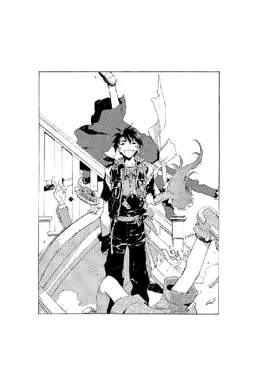

| 魔術士オーフェンしゃべる無謀編7 | |
| 秋田禎信 | |
| (2013) | |
トトカンタ魔術士同盟の主にして、正義の味方ブラックタイガーこと、ハーティア・アーレンフォードは疲れていた。昼は山積した書類の片づけをし、夜はこの街の治安を乱す怪人たちとの飽くなき戦いを行う二重生活に、である。さすがに耐え切れなくなってそれとなく有能なる秘書、ラシィ・クルティに愚痴ってみると、相変わらずの的外れな答えが返ってきた。「なんか昔から変な人多いですよね、この街って」まったく苦労は理解されていないが、確かにそうなのかもしれない。ハーティア自身、こんな話を聞いたことがあった。「凶暴なギャング団が街の裏側を仕切ってたりね」歴史の深いこの街ならば、そんなこともあったりするのだろうが...。
CONTENTS
イラスト：草河遊也 Yuuya Kusaka
デザイン：ヴェイア Veia

「春の日溜まりで......ぬくぬくと」
独り言を言う癖は、少し前に直ったつもりでいたが。
そんなことをつぶやいた理由は、いくつかあった。言葉通り、春の日溜まりでのんびりしていたこと。公園に自分以外誰もいなかったこと。そして、この数日間、ろくに誰ともしゃべっていなかったこと。
特にどうということでもないが。
オーフェンは、ぼんやりした空に向かってため息をついた。雲が移動していくのを目で追って、ゆったりと身体の力を抜く。
黒髪黒目、黒ずくめ。格別になにかあるといった風貌でもないが、胸元には銀製のペンダント──大陸黒魔術の最高峰《牙の塔》の紋章がある。剣にからみついた、一本脚のドラゴンの紋章。
公園である。誰がいたところで不思議もないが、非凡な魔術士たる証明を身につけた者が平日ぶらぶらとしていることは滅多になかろう──オーフェンは、横目であたりを見回しながら、付け足した──正確には、彼以外に誰の姿もない。
ベンチに寝そべった姿勢のまま、彼は続けた。
「ぬくぬくと......のんびりと。なにもせず。することもないし。まあ、情けないってことかな」
風。日差し。その釣り合いの中で目を閉じ、息を吸い──吐く。考えることも、悩み事も、思い出すことも少なくなっていき、浮かんでは消える情景よりも、暗闇の頻度が高くなり......
「あの」
............
はっとして、オーフェンは目を開けた。眠りかけていたらしい。
「あの。ちょっと。ここ、いいですか？」
どれくらい眠っていたのか見当つかないまま、オーフェンは慌てて身を起こそうとした。ベンチに寝そべっていたため、邪魔になったらしい。とにかく、話しかけてきた相手を見つけようとし──
それは、簡単に達成された。ベンチのすぐ前に、若い女が立っている。
年齢は、自分と同じくらいだろう。もう少し若いかもしれないが。まるで外気に触れたくないとばかりに手袋をつけ、淡い色のコートを着ている。顔の下半分をマフラーで覆って、この陽気には明らかに不自然ではあった。
が──
「あ。ああ。すまない」
オーフェンは起きあがると、公園にひとつしかないベンチの一方を空けた。疲れていたのか、どさりと音を立てて、彼女が腰を下ろす。
彼女が顔を隠そうとしている理由は、その隙にちらりと見えた。左目の下あたりに黒々と、殴られたようなあざがついている。口元も、切った跡があった。
こちらの視線に気づいたのか否か──彼女は手早く、長い髪で、それを隠すようにした。小さな嘆息が、聞くともなしに耳に入る。
「............」
言葉もなく、オーフェンはとりあえずまた空を見上げた。
（あのくらいの外傷なら、魔術で治せる......かな）
そんなことも思うが、どう切り出せばいいのか分からない。
（まあ、気取ったところで仕方ないし、そのまま言うか？）
「あのな──」
横を向いて話しかけた、その瞬間。
「あっ」
彼女はなにかに気づいたように声をあげると、すぐさま腰を上げた。なにか、公園の外の通りのほうを気にしたようだったが。
そそくさとコートの前をまとめると、彼女はこちらに軽く一礼してみせた。
「あの、いえ、すみません。ちょっと急ぐので」
それだけ言うと、足早に、公園の裏口から去っていく。
と、ほとんど入れ違いに、表から入ってくる足音があった。
見やると、これまた微妙に陽気とは不釣り合いな黒いタンクトップの男だった。年齢は、やはりまた同じくらいだろうか。薄着だけに、がっしりした体格がよく分かる──他人に見せつけるためにこういう格好をしているのかもしれないが。よほど走り回ってきたのか息を弾ませ、こちらに近づいてくると、
「............ちっ」
一目見て、自分の探している相手と違うのは分かったのだろう。舌打ちだけして、彼女が出ていった裏口から走り去っていく。
「............」
なにをする隙があったわけでもなく。
オーフェンはとりあえず、彼女らが去った方向をぼんやり眺めていた。
「............」
夜。特にあれからなにをするでもなくただのんびりと時間を潰し、帰ってきた宿の食堂で、オーフェンはやはりぼんやりと頬杖をついていた。ずっと使っていたテーブルではなくカウンター席で、空のグラスをもてあそぶ。コースターに輪となったグラスの水滴に、グラスの底をずらしてはまた置き直す。そんなことを何度となく繰り返していると、とりあえず時間だけは潰れてくれた。
カウンターの中で、同じ形のグラスを磨いている店のマスター──バグアップが、小さくつぶやくのが聞こえてくる。
「静かだな」
「もう慣れただろ」
こちらも小さく、オーフェンはつぶやき返した。
会話を拒絶したつもりだったのだが、バグアップはそのまま続けてきた──気づかなかったというわけでもないだろうが。
「あの連中がアーバンラマに帰って、もう一週間か。こうまで静かになるものだとはな」
「客がいないことに危機感を持つべきだよ」
「昔がむしゃらに働いた分、静かに暮らしたいのだがね」
「じゃあ、望み通りじゃないか」
オーフェンは適当に切り返して、顔を上げた。グラスからは手を離し、
「なあ」
「うん？」
「結婚してたんだろ？」
「今でも継続中だ」
バグアップは顔をしかめて、強調してきた。よほど聞き捨てならなかったのか、グラスを磨くのを中断さえして、
「いいか、あいつがまあ、この街にいるのが都合が悪いというんで、別居してるだけだ。この店も捨てられないとかでな。あいつの昔の仲間とも少しずつ話をつけているし、いずれは──」
「いや別に、そのへんはどうでもいいんだけど」
手を振って、オーフェンはうめいた。
「夫婦喧嘩ってするか？」
「当たり前だろう」
「いや、そうじゃなくて......殴り合いの喧嘩というか」
「それはさすがにないなぁ。滅多に」
「あるのかよ」
とりあえず言ってから、肩を沈めて聞く体勢を作る。と、バグアップは自分の顎鬚をなでつけながら、思い出すように顔をしかめた。
「口喧嘩は頻繁に起きる。口論が激化すれば手があがるのは時間の問題だ。結局そこで踏みとどまれるかどうか、それまでにため込んだストレス次第だろう。わしが知る限り、理性ってのはどうしても感情に負ける。お前さん、誰かとつき合ったことは？」
「あるよ」
「どの程度のつき合いだった？」
「どの程度......って言われてもな」
言葉を濁すと、バグアップは肩をすくめてみせた。
「まあいいさ。どんなことでも長続きさせるには、忍耐が必要になる。誰でも、自分のことには甘いが、他人には厳しいからして、他人の欠点を我慢するほうが難しい」
「......やっぱり、夫婦仲悪かったんじゃないか？」
「まあ、それはともかく」
あさっての方向に咳払いするバグアップを半眼で見つめていると、彼は種明かしでもするように両手を広げた。
「我慢することに慣れはしないが、幸福にはすぐ慣れっこになる。慣れた幸福はもう用を成さない......って、なんの話だった？」
「どうでもいいよ」
適当に答えて、またグラスの縁に手を置く。オーフェンは、どちらかといえば独りごちるような心地でつぶやいた。
「......ま、赤の他人のことに口出ししなくちゃならん理由もないし......どっちみち公園ですれ違っただけで名前も知らないし......」
ぶつぶつと、こぼす。
と、バグアップもまたグラスを手に取り、磨き始める。同時に言ってきた。
「......お前ひょっとして、やることなくて退屈なんだろう」
「............」
しばし、考え込み──
「かもな」
オーフェンは嘆息して、グラスをころんと転がした。
やることがないわけではなかった。
が。
いつものように地人兄弟をマスル水道で炎上させてきた帰り道、そのまま宿にもどる気にもならずに、昨日の公園に立ち寄る。日に日に春へと近づいていく陽気の中あたりを見回し、やはり無人のベンチに腰を下ろして、オーフェンは胸中でつぶやいた。
（......やっぱ、退屈なのかな）
考えたところで、ほかに理由が思い浮かばないということは、そうなのだろう。
（別に、退屈しのぎってつもりはないんだけどな）
なんとなく後ろ暗く思いながら、そんなことを言い訳する。誰に対してというわけでもなかったが。
もとより、同じ場所にいたからといって、同じことが起こるとは限らない。それでもなお、なんとなくここに足が向いたのは──やはり、ほかにすることもなかったからなのだろう。ぐるぐると回る思考の尻尾を追いかけて、結局は同じ答えを何度もつつく。
風に誘われてまたベンチに横になり、呼吸を数回。眠気を自覚し始めた頃だった。
「あの」
............
目を開けると、まるっきり昨日と同じく、彼女がいた。名前は知らないが。
「ここ、いいですか？」
言われてオーフェンは、無言のまま起きあがった。と、横に腰を下ろし、彼女が控えめなため息をつくのが聞こえてくる。
格好は、昨日より薄着になっていたが──それが、少なくとも口元を隠す必要がなくなったせいであるのは疑いなかった。頬にはまだあざが残っているようだったが、それはなんとか髪で隠そうとしている。
どうしようもなく気まずい中、オーフェンは相手を盗み見ては視線をそらすのを繰り返していた。彼女は気づいた素振りもなく、ただじっと座っている。傷が痛むのかもしれないが、どこか沈痛に前方を見つめていた。
結局のところ、それなりの時間は経ったのだろう。しばらくすると、彼女が表情をはっと変えた。つられてあたりを見回すと、これもまた、昨日の男が姿を現していた。ただし、昨日と違うのは──公園の表ではなく、昨日彼女が逃げていった裏側から入ってきたことだった。
「............⁉」
混乱した顔で、彼女が立ち上がる。その時になってオーフェンは、彼女がじっと、公園の表口を見つめて──見張っていたのだと気づいた。警戒していたつもりが、裏をかかれたのだろう。
「てめえ......こん......なとこに......」
ぜえぜえと肩で息をしながら、男がうめく。彼女は口元に手を当てて、後退りした。細い指の向こうにのぞく目が、見開かれている。絶望的に。
「来るんだ」
男はただそれを言っただけだった。右手を差し出し、彼女の方へと大股で近づいていく。そして──
足を止めた。
彼女と彼の、ちょうど中間のあたりに立ちふさがる形で、オーフェンはじっと半眼で、男を見やった。ベンチから立ち上がって割り込んだだけだが。
「なんだ、てめえ？」
男が引きつった声をあげる。
オーフェンは、そのまま告げた。
「どうしても彼女を連れ帰りたいんなら」
と、目つきを強める。
「自分よりも強い奴の頭越しに同じことを言ってみろよ。できないなら、ひとりで帰るんだな」
「てめっ──！」
男が今度は怒りに引きつった声を出したが、それはどうやら、彼女に向かって吐いたもののようだった。
「こんなところに、男がいたのか⁉」
「違......」
うろたえるような、彼女の声。オーフェンは最後まで聞かずに答えた。
「いや。ただの通りすがりだ。まあ、他人事なんだろうが、あんまり見過ごしていい気分のもんじゃないようだからな」
「なに言ってやがるんだ、てめえは？」
男が拳を固めた。それを振り上げて、叫んでくる。
「いいかエリッセ！ さっさと帰ってくるんだ！ でないとただじゃ──」
そこまでだった。オーフェンは小さく飛び出し、右拳を突き出した。尖った拳の先端は意外に思えるほど呆気なく男の腹筋に突き刺さる。男の顔色が変わり、そのまま倒れ伏して悶絶するのを見下ろして──
大きく息をついてオーフェンは、かぶりを振った。
「ま、根本的な解決ができない手助けなんてのは、ただのおせっかいなんだろうけどな」
振り返る。身を縮めるようにして成り行きを見ていたらしい彼女に、
「あんまりひどいようなら、手遅れになる前に警察にでも行けよ。それが万全とは言わないが、なにもしないよりはマシだろ」
「............」
きょとんとした眼差しで見つめ返してくる彼女に、言えることというのもその程度のことでしかなかったが。
「あの」
そのままその場から立ち去ろうとした時、背後からかけられた声に、オーフェンは足を止めた。見ると、彼女が胸の前で手を組んで、おずおずと言ってくる。
「手を痛めたんじゃないですか？」
「え？」
目をぱちくりし、オーフェンは右手を確かめた──気にしていなかったが、確かに少し、手の甲の筋に引っかかりを感じる。
（ちと、力みすぎてたか？ この頃なまってたし）
そんなことを考えていると、すたすたと彼女は近づいてきて、有無を言わさずこちらの手を取った。
「やっぱり。冷やしたほうがいいですよ。ほっとくと、夜にはひどくなります。氷......」
と、あたりを見回し、
「喫茶店とかになら、氷、ありますよね」
腫れた頬の上にある瞳が、凍った湖面程度に輝いているように見えた。
「わたし、あったかいお茶を。なんでもいいですけど」
ウエイトレスがうなずいて去っていく。あれから一番近くに見つけたのは、半地下の喫茶店だった。夜からはバーにでもなるのだろうが、天井に近いところにある窓を大きく開けて、まだ店内は明るい。先に氷だけをグラスに入れて出してもらい、それが自分の目の前に置いてあった。
なんとなく、置いてきぼりにでもされたような心地で、それを見ている。
と、視線を上げると、彼女がじっとこちらを見ていた。
「もっと笑ったほうがいいですよ」
唐突に、そんなことを言ってくる。
「喧嘩した風に見えたりすると、あなたがわたしを殴ったように思われるかも」
「............」
冗談で言っているのかどうか、いまいち判別がつかず、とりあえず沈黙する。
確かに痛めた筋が、時間とともにうずきだしているようだった。グラスから氷をひとつ取り上げて、痛む場所に当てる。と、彼女の指が同じグラスに伸び、やはり氷をひとつ取り出した。それを自分の顔に触れさせ、その感触に目を閉じる。
「しみますね」
笑って、彼女がうめく。
「いつも公園で寝てるんですか？」
「いや......」
どうしても答えが短くなる。
（......なにがどう、ってわけでもないんだけどな）

オーフェンは胸中で自問した。
なにがどうというわけでもないため、どうすることもできず、どうなることもない。
彼女は気楽そうに笑うだけだったが。
「わたし、いつもあの公園に逃げ込むんですよ。今日はどうも、うっかり回り込まれちゃって......」
「分かった」
「え？」
「あ、いや、すまない。ちょっと口から出ただけで。意味はないんだ」
思わず出たつぶやきのことをごまかしながら──
オーフェンは、独りごちた。
（そうか......分かった）
繰り返す。この女と向かい合っていて気まずい理由。彼女の怪我のことを訊ねないことにはなにも話せそうにないというのに、いざ訊ねるには気後れする。そういうことだろう。
合点がいったところで、どうなるわけでもないが──
それでもオーフェンは、彼女が漏らした言葉をある程度まとめていた。
（いつも逃げ込んでいた......ってことは、いつも追いかけ回されてるってことか）
ということは、おおむね、初見からの直感は正しいのだろう。恐らく彼女はあの男とは夫婦かなにかで、常習的に暴力を振るわれている。家庭内の問題に外部の人間が関わることは──様々な意味で──困難だが、ほうっておくとそのまま最悪の結末にもなり得る。
（参ったな）
こんなことを思わずにいられなくなるとは夢にも思わなかったが。
（こりゃ、完全に警察の領分だろ。コギーの奴がいりゃ、簡単に解決できたんだろうに）
彼女が専門家に相談すればそれで済む。
「あのな──」
「わたし、エリッセって言います。エリッセ・スカイランド。あなたは？」
「ええと......」
なにも言えないうちに話の腰を折られ、オーフェンは言葉に詰まりながら、それでもなんとか名前を吐いた。
「オーフェンだ。あのな、ええと......エリッセ？」
「強いんですねぇ。なにかそういうお仕事かなにかされてるんですか？」
「ええと......」
答えるべきか無視するべきか──一瞬迷ってから、彼はうめいた。
「魔術士なんだ。そういう訓練も受けてる」
言ってから、自分の選択が間違っていたと自覚する。
エリッセが歓声をあげるのが聞こえてきた。
「うわぁ......わたし、てっきり──ええと、あの、ええ。そうなんですかぁ。魔術士さんなんですか。初めて見ました」
「わたしてっきり、のあとがなんだったのかちょっと気にかかるが」
一応言っておいてから、オーフェンはかぶりを振った。
「いくつか聞きたいことがあるんだけどな、エリッセ」
「あ、わたしもあるんです。オーフェンさん、おいくつなんですか？」
「いや、あのな」
「すごいですよねぇ。なんか一発で倒しちゃって。コツでもあるんですか？」
「聞けって」
「ほら、やっぱりその、女って弱いじゃないですか」
「女が弱い......？」
ぴくり、と反応し、言葉を止める。様々なことを思い浮かべてから、オーフェンは聞き返した。指先でテーブルをこつこつと叩き、
「なにをわけの分からないことを言ってるんだ？」
「わけ分からない......ですか？」
目をぱちくりさせ、彼女が聞いてくる。オーフェンは腕組みしてうなずいた。
「当然だろう世界の常識だ。俺は姉貴に担ぎ上げられてぶん投げられたことがあるぞ」
「いや、そんな小さい頃の話とかされても」
「そんなにガキの頃でもなかったよーな気がするが」
ふうむとうめいて、言い直す。
「確かに、一般的には男のほうが腕力で勝ることになってる」
「はい」
「でも別にそいつは女の身体は鍛えられないって意味じゃない。ある程度以上鍛錬すれば、男も女もない。やっぱり得意分野は違うから、頭を使う必要はあるけどな」
「なるほど」
「俺の姉貴は同じ歳の男を簡単にねじ伏せたりしてたが、彼女が言うには──」
「ふむふむ」
「............」
ふと、止まる。人差し指を一本立てた説明のポーズのまま半眼になり、オーフェンはゆっくりと、その指を引っ込めた。いつの間にか乗り出しかけていた背中を椅子の背にもどし、息をつく。
「いや、警察に行くのがいいと思うぞ」
言い直すと、エリッセは、きょとんとしたようだった。
「なにがですか？」
「いや、だから、しょせん腕力なんて鍛えたところで、そんなもんで解決するのなら、さっき俺がノしただけで終わりになってるはずだろ。生兵法をかじるよりは、専門家にきちんと相談したほうがいい」
「えっと......」
彼女は、しばし黙考して──
「ああ！ ええと......なるほど」
ようやく分かったのか、ぽんと手を打ってから、こくこくとうなずいてみせた。が、
「でもわたし、強くなりたいんです」
「だからそれは、単純な暴力に対して強くなったところでだな」
うめくが、彼女はただひとりで得心したようにうなずき続けていた。
「あなたの周りにいた人っていうのが、そんなに強い人ばかりだったんなら、ちょうどいいです。その人たちがどうしてそんなに強かったのか、教えてください」
「ンなもん、解説できるくらい理解できてたら、俺だってえんえん泣かされ続けたりはしなかったと思うが」
「スポーツ解説者なんて、自分たちじゃもう最新の理論なんてついてこられやしないくせに、ふんぞり返って偉そーなことばっかりのたくたしゃべくってるじゃないですか。そのノリで」
「駄目だろそのノリじゃ」
「困りましたねぇ」
ひとりで勝手に困り果て、難しげな顔を見せる彼女に、オーフェンはこめかみに手を当てて軽く頭を抱えた。いったん退くべきだろう──そんなことを考えながら、
「あのな。どう考えたところで、家庭内の問題なんてもんを戦闘技術で解決できるもんじゃないだろ。それよりは、警察に行って根本的な解決を」
「でもぉ......」
「でもじゃなくて。だいたい、戦闘訓練なんてのは、付け焼き刃が一番危ないんだ。君のためにも教えられないな」
「ちっ」
「......え？」
「どうかしましたか？」
なにか聞こえたような気もしたが──きらきらと瞳を輝かせてこちらを見ているエリッセに、首を傾げながらも続けようとする。
「だから──」
「じゃあ、路線変更ということで、わたしを守ってください」
「路線変更？」
「いえ気にしないでください。わたし......わたし、怖いんです」
顔を伏せ、そっと手を添えて、彼女が声を震わせる。
「あの人に、今度はなにをされるか。毎日毎日怯えて暮らして......もう疲れました」
そう言ってから、くるりと顔を上げた彼女の目には、涙がたまっているように見えた。
「誰を頼ったらいいものか、もう分からないんです。図々しい頼みだとは思います。ですが......」
「だから警察に」
「警察がなんになるっていうんです？」
形の良い眉をひそめて、彼女が詰め寄ってきた。
「いったんは保護されても、すぐにあの人が迎えに来て......少しばかり警官と談笑して、気まぐれでヒスを起こした女ってことでわたしをもとの家に引きもどして、また同じことの繰り返しになるんじゃないですか？」
「まあ、そんな話は聞かないでもないけど......」
「お願いです。あなたしか頼れないんです。もし、わたしを守ってくれるのなら......わたし、わたしあなたのこと」
「......え？」
「来ましたっ！」
がたんと椅子を蹴り、立ち上がりながらエリッセが叫ぶ。
思わずつられて腰を浮かせ、彼女が見つめる店の入り口へと向きやると、例の男がすさまじい形相で大声を張り上げるところだった。
「エリッセー！」
拳を固め、それを振りかざしながら店内に入ってくる。
「こいつのことを忘れたのか⁉ いいか、おい、こんなところで遊んでいる暇は──」
「きゃあああっ！」
エリッセが悲鳴をあげ、背後に回り込んできた──わざわざテーブルを迂回して。
「もう嫌よ！ 絶対にもどらない！ わたしはこの人と、新しい生活を始めるの！」
「へ？」
きょとんとうめくが、誰も疑問に答えてくれないまま、男がさらに怒声を張り上げる。
「なんだとエリッセ！ 今まで築き上げてきたものを全部捨てる気か⁉」
こちらの背後から顔だけ出して、エリッセも負けないほどの声をあげた。
「もともと無理だったのよ！ 長続きするはずがなかったんだわ！」
「言うに事欠いてこの──」
と、そこまで叫んで急に周囲の目が気になったのか、男は店内を見回した。店員がぽかんとしたように見つめているのに気づいてさらに紅潮してから、また彼女をにらみ据える。
「いったいなにが不満だっていうんだ⁉」
「だって、あなたの言う通りにしていたって、痛いだけじゃない！」
「............」
さすがに店内が、しんと静まりかえる。
怒りの形相はそのままに──ただ言葉を失ってぶるぶると震え、彼が、熱くなりながらも底冷えするような声音を吐いてきた。
「俺はあきらめないぞ......いいか、どこまで逃げようと、必ず連れもどす」
「絶対に帰らないわ」
「だいたいなんだ痛いだけって。お前だって結構喜んで──」
ごぎんっ！
男の身体が、唐突にひっくり返った。床に尻餅をついた格好で、頭を抱えて困惑している。
横から飛んできたトレイに、横面を痛打されたらしい。
「な、なにしやがる──⁉」
そのトレイを投げつけたウエイトレスに、怒鳴る間もなく。
さらに二枚飛んできたトレイが、男の顔面をえぐった。
「ううう......」
ふらふらと起きあがろうとする彼の周りに、ずらっと、店にいた数人のウエイトレスたちが並ぶ。
「な、なにを......？」
先ほどより相当意気をすり減らした口調でうめく男に、彼女らの返事は一言だけだった。
「最っ低」
「ぎゃああああっ⁉」
そのまま、構わずに殴る蹴るの暴行が始まる。
「............」
ただ黙って──黙らざるを得なかったが──成り行きを見ていたオーフェンは、後ろから腕を引っ張られて振り向いた。エリッセが、小さくつぶやいてくる。
「今のうちに逃げましょう」
「そ、そーしとくか......」
つぶやき返し、集団暴行が行われている横を通り過ぎて、彼らは店の外へ出ていった。
「もどって来ちゃいましたね」
肩と息とを弾ませながら、エリッセの声は途切れなかった。店を出てから走る意味はほとんどなかったと言っていいだろうが、なんとなく彼女に腕を引かれて、気がつけばもとの公園まで急いでしまった。
帰ってきた公園にはやはり人気はなく、昼を過ぎて陽が弱まった以外に変化はない。
エリッセが、走ってきたせいで乱れた髪を、また傷を隠すように整えようとしている。オーフェンはその彼女の手を、指先で軽くとどめた。驚いたような顔を見せる彼女に構わず、静かに唱える。
「......我は癒す斜陽の傷痕」
すっと──音もなく、彼女の怪我が消え失せる。見えずとも気配で分かったのか、エリッセは感嘆の声をあげながら、腫れのなくなった自分の頬をぺたぺた触った。
「うわあ......こんなことができるんですか」
「あまりやらないほうがいいんだけどな」
「？ なんでですか？」
両手を左頬に当てたまま、エリッセが聞いてくる。オーフェンは肩をすくめてみせた。
「失敗することがあるからさ。特に他人の身体のことは分からんし」
「はあ......でも、ありがとうございます」
ぺこり、と律儀に頭を下げて、言ってくる。すぐに顔を上げた彼女は、やけに機嫌良く笑顔を見せていた。
「なんかわたし、ついてるって感じですよね」
「え？」
分からずに、聞き返す。と、彼女は軽くなにかを跳び越えるように、こちらに近づいてきた。
「だって、怪我して逃げた先の公園に、たまたまオーフェンさんがいて──それで助けてもらって、しかも治してもらって。こんなに都合いいことってそんなにないですよね」
「ついてる奴は、怪我なんてしないだろ」
ついでに、変な男に引っかかったりもしないだろう──と胸中で付け加える。
だが、エリッセはまったく気にしなかったようだった。さらに顔を近づけてくると、こちらを見上げて続けてくる。
「違いますよ。怪我してなかったら、仮にどこかの道ばたであなたに出会ったって、助けてもらえなかったじゃないですか？」
「......なんか微妙に本末転倒じゃないか？ それ」
「いいんです。さ、行きましょか」
と、またこちらの腕を取って、引っ張っていこうとする──どこへかは知らないが、公園を出ようとする方向ではあった。その彼女の後頭部を見下ろしながら、聞く。
「行くって、どこへ？」
「はあ？」
ぽかんと口を開け、エリッセはたっぷり数秒、呆れ顔のまま固まった。しばらくしてから、言ってくる。
「さっき言ったじゃないですか」
「なんて」
「ですからぁ」
なにやら、もじもじと身をよじり、口元のあたりで手を組み合わせ、
「あなたと、新しい生活を」
「待たんかい」
半眼で、オーフェンは告げた。
「それこそ、ンな話がどこにある⁉」
「なにがですか？」
「だから！ なんで道ばたでちょっと手助けしただけで新しい生活なんだよ！」
「いや、それは冗談だとしても」
エリッセはあっさり言うと──虚空を見上げ、頭をかいて、
「行くところがないんです。どこか、落ち着けるところ知らないですか？ あの人のところには......もどれないでしょう？」
「............」
反駁しかけ──
なにも言葉が出ない。とりあえず、彼女の言うことが正しいのも理解できた。ほうっておくこともできない。
（結局のところ......）
言葉に出さず、観念する。
（自分から関わっといて、もう関わりたくないってーのもないわな）
うつむき、心持ち口を尖らせてこちらをじっと見つめてきているエリッセに、オーフェンはうなずいた。
「俺は、宿屋に居候してるんだ。なぜか、いつも客のいない宿でね。部屋はいくらでも空いてる。頼めば君も泊めてもらえるかも」
「ホントですか？」
「多分。一応聞いとくけど、君、ここいらに親類か友達いないのか？」
「あー......わたし最近、越してきたばかりなんです。生まれは東部で。ほらほら東部訛り」
「いやよく分からんけど」
と。
声が聞こえてきた。
「エリッセェェェェェ......」
見やる。そこにはやはり、例の男がいた。片目は開いていない、鼻はそっぽを向いている、靴も片方どこかになくしたのか裸足になっており、髪もぼさぼさ──一言でいえば手ひどくずたぼろになっている。
男は、ふらふらと手を伸ばしてきた。数メートルは離れているためどうというわけでもないのだが、遠近感もなくなっているのか、その震える指先でなにかをつかもうとするように空気をひっかいてから、ぱたりと地面に倒れる。
それでも力尽きず、声だけは聞こえてきた。
「あきらめ......ないぞぉ......エリッセェェェ......俺たち......俺たちの──」
「早く行きましょうっ！」
なにかを言いかけた男の声を遮るように、横から、エリッセが大声をあげた。驚いて見やると、彼女が腕を抱え込んで、引っ張り出す。
「いや、そんな急がないでも──」
オーフェンがうめくと、彼女は激しくかぶりを振った。
「いえ！ 急ぎます！ きゃあ怖い早く逃げないと！」
「虫の息だぞあいつ」
指さして言う。男の動きも声も、さらに細くなっていた。
「エリッセェェ......お前は......チャ、チャン──」
「きゃあきゃあきゃあ！」
「お、おい⁉」
いつになく強い力で腕を引っ張られ、引きずられながら公園を出る──と、ちょうど前を通りかかった若い通行人にぶつかりそうになって、エリッセが足を止めた。公園に取り残された男の声に追いやられるように、彼女はなおも進もうとしていた。とりあえずオーフェンも、抵抗をやめていっしょに歩こうとしたが、刹那。
「あれっ？」
通行人が、声をあげた。驚いたように、エリッセを見ると、
「ちょっとあんた、ひょっとしてエリッセ・スカイランド？ うわあ、俺あんたのファンで──」
「きゃあきゃあきゃあきゃあ！」
彼女がひときわ大きくわめき立てる──そして、
「なに言ってるんですかきっと人違いですからごめんなさい。さあオーフェンさん！ 急いでっ！」
「え？ でも──」
わけが分からないまま、歩く速度を上げる彼女に引っ張られていく。
ともあれ。
これが彼女、エリッセと知り合った顛末だった。
（つづく）
「......やっぱりこうして......ぼやぼやと」
突拍子もない出来事というのは、起きてしまえば日常に過ぎない。恐らく、そういうことなのだろうと思う。
屋根の上から街を見下ろしたところで、その道を歩くこととどれほど違うというわけでもない。ただひとりで静かにしていられるというだけだった。それはもしかしたら、貴重なことだったのかもしれないが。
トトカンタ市は、良くも悪くも大都市である。これから先、永遠に出会うことのない無数の人間が、すぐ隣で生活しているのが不自然ではない。単なる偶然で知り合った、ごく限られた出会いと、それと同数か、あるいはほんのわずかだけ少ない別れ。
（実際、俺だって）
風に吹かれて、ぼんやりとオーフェンは独りごちていた。
（いつまでもここにいるわけじゃねえしな）
そこはいつもの宿だが、屋根の上というのは日頃の定位置というわけではない──ただ、なんとなく空が見たくなってここにいる。
（そもそも、予定より長く居座りすぎたんだ。ここに。分かっていたんだけどな）
とうに、動かなければならない時だったのだろう。この街に見込みがないのは明白なのだから。
それに、特にもう、この街に未練があるわけでもない。
空に向かって、彼は嘆息した。
と──
「オーフェンさーん」
聞こえてきた声に、オーフェンは身体を起こした。屋根からずり落ちないように体重は後ろに残して、首だけ下をのぞき込む。と、屋根の下から、女がひとり、明るい顔でこちらに手を振っている。
なんの用かと聞き返すよりも早く、彼女は、あとを続けてきた。
「食事の用意ができたんで。早くしないと冷めちゃいますよ。そんなに量がないですから」
「......ああ」
うなずくと、それで満足したのか、気楽な足取りで宿の中へと入っていく。彼女がいなくなってから、オーフェンはもう一度嘆息した。胸中でうめく。
（なんだかなぁ）
無能警官も、変態執事もいなくなって。
この街で出会った分は、もうおおむねすべて別れたのだ──今まで、大陸各地を放浪しながら、そうしてきたように。
（彼女──エリッセだって、それと同じ。どうっていうわけでもない。普通に知り合っただけで、なにか特別なことがあるわけでもない......だろ？）
自分に言い聞かせる。が。
今までのようには、思い切ることができなくなっている。つまりは──
（やっぱり長く居座りすぎたんだよな、この街に......）
うめいてから、彼は呪文を唱え、屋根から飛び降りた。
「あのー」
食事が終わって──
食器を集めて勝手に厨房へと入っていったエリッセと入れ替わりに、マジクが出てくる。その少年は、なにやら不思議そうに厨房のほうを見やってから、声をひそめて聞いてきた。
「オーフェンさん。あの人、誰なんです？」
とりあえずオーフェンは、ため息をついた。
「今さら聞くことでもないだろ。もう三日だぞ、あいつがここに来てから」
「そうですけど」
マジクが金髪の頭をかきながら、うめく。やはり視線は厨房の扉へ──もちろん、エリッセの姿が見えるわけでもないが。
「なんか、いきなりすごく馴染んでたから、聞きそびれちゃってたんですよね。オーフェンさんの親戚かなにかかと」
「知らん。つーか、俺も彼女のことは、名前くらいしか分からない。なんか家庭に面倒ごとがあるようなんだが......ンなもん、こっちから聞けることでもないしな」
「はあ。まあ、宿代は払ってくれてますから、いいんですけど」
「宿代？ そんなものを徴収してたのか？ ここって」
「そんな根本的な疑いを持ってたところで、そのうちきちんと払ってもらいますからね、オーフェンさんにも」
「変わったシステムだなぁ」
「そーやって無理に自分に言い聞かせてるうちに、本気で世の中からズレていくんですよ、ホントに」
と、それだけ言ってから、マジクが去っていく。また入れ替わりにエリッセが出てくるのを、オーフェンは頬杖をついて、ぼんやりと眺めていた。彼女は妙に上機嫌にも見えたが、実際はなにがあったというわけでもなく、単に普段からそうなのだろう──軽く鼻歌など歌いながら、気楽な足取りで近づいてくる。
見せた微笑も、軽かった。
「片づけてきましたー」
「......なんで客なのに、君が片づけるんだ？」
「いえなんとなく」
「なんとなくか」
ほかに言うべきことも見つからず、口を閉じる。
しばらくは、テーブルの向かいに座る彼女を待つような形で、ただじっとしていたが、エリッセが、やはり鼻歌を歌いながら、しきりにこちらを見つめてきているのを数分間も眺め、ふと意味のない焦りが浮かんだ。
（......なにやってんだ？）
なにもしていない。まあそういうことなのだろうが。
なんとなしに感じるものがあって、椅子から立ち上がる。間髪を入れず、エリッセも腰を上げるのが見えた。すぐさま、また座り直す。と、彼女もそれに倣うように席についた。
「............」
「............」
しばしの無言──
視線と視線がぴたりと重なった状態で、動かず動ぜずにらみ合う。間合いが張りつめ、そこにあるものが空間ではなく冷水であるかのような。そんな気配を感じながら、オーフェンは機を見つけた。
なにか合図があったわけではない。とはいえ、機は機だった。
眼球が痙攣した。ただそれだけのことだったのかもしれない。とっさに視線だけ、右を向く。それにつられて彼女の目が揺れるのがはっきりと分かった。その隙をついて、立ち上がる──ふりをして、さらに横に跳び、床を転がる。
その場で素早く立ち上がる──再びふりだけして、もう一度跳んだ。ほんの一瞬で、宿の出口にだいぶ近づいている。
（勝った──！）
なにに勝ったのかは、自分でもよく分からなかったが。
あとは全力で出口から飛び出す。そのつもりで顔を上げる。
そこに、エリッセがいた。
「なにっ⁉」
反射的に硬直する。彼女は鏡映しのように同じ体勢で、目の前にかがみ込んでいた。あれだけフェイントを重ねたというのに、まったく遅れずついてきたらしい。
「............」
「............」
しつこく沈黙。そして、彼女が口を開いた。
「今まで気づきませんでしたけど、変な歩き方するんですねぇ」
「違うだろ⁉」
叫んでから、オーフェンはあきらめて立ち上がった。腕組みし、うめく。
「あのな。なんか用なのか？ 俺に」
「いえ、特に」
「じゃあなんでつきまとう？」
「つきまとってないですよ。行き先を真似してるだけでー」
「それはおおむねつきまとってないか？」
「見方は人それぞれだと思います」
「うーむ」
どう言っても通じないものらしい。
眉間にしわを寄せ、首を傾げたまま、宿を出る。あとから、なにやら扁平な、ぺたぺたとした足音を立ててエリッセがついてくるのは分かっていたが、とりあえず無視して歩くことにした。
五十メートルほども歩いてから。
オーフェンは、足を止めた。すぐ後ろで、彼女も立ち止まる。
そして──
すぐ横のビルを見上げて、オーフェンは叫んだ。
「我は跳ぶ天の銀嶺っ！」
「あー！」
声をあげるエリッセを残して。
重力中和で一気に建物を飛び越えると、隣の通りに着地する。そしてそのまま全速力で駆け出し、オーフェンは胸中で歓声をあげた。
（逐電成功！）
ここ数日では、初めてのことだった。
「まーったく。ようやく振り切ったか。しつこいっつーか隙がないっつーか」
このあたりでいいかと見当をつけたのは、もといた宿から相当離れてからだった。なんとはなしに、それでもまだどこか不安を覚えないでもなかったが。
あたりを見回す。
人混みに紛れることも考えないではなかったのだが、どのみち紛れ込んだところでいかほどのものでもないと、あえて人気のない路地を選んで逃げてきた。大人数から追われているのでもない限り、そのあたりは深く考えたところで大差ないところではある。
混雑と混雑の隙間、そんなような静かな道だった。建物と壁を通して、ざわめきが聞こえてこないわけでもない。だが近くなってくる気配もない。
そんななにもない道であったから──その足音は、容易に知れた。
「............？」
エリッセではない。足音の重さが違う。自分以外の通行人がいたところで不思議はないのだが、それでもオーフェンは振り向いた。
体格の良い男がふたり、ゆっくりと近寄ってきている。まだ数メートルは距離があるが、彼らの視線ははっきりとこちらを見定めていた。ふたりとも鼻にしわを寄せるほどのしかめ面で、あからさまな敵意をむき出しにしている。
と、またさらに背後──つまりそのふたりとは逆方向から、別の気配がした。また同じように男がふたり、姿を見せている。
ただ、そちらの男たちの片方には、見覚えがあった。
「ようやく見つけたぜ......」
そんなことを、うめいてくる。数日前に見たきりの顔だったが。
包帯で腕を吊り、逆の腕で松葉杖を抱え、片足を引きずりながら、さらには首にもコルセットを巻いている。顔面にもひどい痣が見えた。実際、人相もかなり変わっていたが──逆に、この怪我でもなければ思い出せなかったかもしれない。
そんなことを思いながらオーフェンは、あごの先を指でかいた。
「どうしたんだ？ その怪我」
へっへっへ......と、どちらかというとやけくそにも聞こえる笑い声とともに、男が答えてきた。
「あのあと、あのウエイトレスどもにまた見つかって、もう寄ってたかって腕とか折られてな」
「うあ」
「奥歯も一本折れた。暴力って怖いよな」
「うーむ」
とりあえず、つぶやく。
「そんだけやられたら、さすがに懲りたろ。いい加減、警察沙汰になる前にあきらめたほうが身のためなんじゃねえか？」
嫌みではなく彼に同情して──こうなると、せざるを得ないが──言ったつもりだったのだが、男はさっと顔面を赤くすると、こわばった怒声をあげてきた。
「なにが警察沙汰だっ⁉ こっちの台詞だ！ お前こそ、エリッセを早く引き渡せ！ いいか、これは誘拐だぞ⁉」
同時に、ほかの男たちも、適当にうなずきあってから一歩、包囲を狭めてくる。実際にどうこうするというよりは威圧しようとしているのだろうが。
「誘拐ねえ」
オーフェンは、とりあえず全員の立ち位置をそれとなく確認した。一度頭に入れてしまいさえすれば、あとは気配だけで全体を把握できる。
「エリッセか。そういや、彼女の歳も知らないが、未成年ってわけでもないだろ。本人の弁では、新しい生活を始めたいそうだから、あんたに関知できるこっちゃないわな。俺の知ったことでもないけど」
「十九歳九か月と十六日！ エリッセ・スカイランド、身長百六十四センチ体重五十六キロ半！ 視力二・一の右利きだ！」
やたらとすらすら叫んでから、男はさらに声を裏返らせた。
「いいか！ お前と押し問答してても埒があかねえ！ エリッセと会わせろ！ きちんと話をすれば──」
「なんの話にもなりそうにないってのは、もう思い知ったんじゃねえか？」
「ふざけるな！ 俺は、エリッセのことならなんでも分かるんだ。なにもかも、全部だ。だから、ここ最近の彼女の行動が本意でないことも分かってる！ ちょっとばかり羽根を伸ばしたかったんだろう。それはいいんだ！ だが、時期がまずい──今は」
「なんにしろ当人が嫌がってるものを、教えるつもりはねえよ」
肩をすくめ、断る。と──
待っていられなくなったのか、最初に現れたふたり組のほうが、飛び出してきた。すぐに間合いを詰めて、殴りかかってくる。
（......っ⁉）
ただのごろつきの類かと思っていたのだが、軽く握った拳を素早く突き出してまた引っ込める、格闘式の動きだった。牽制の軽い突きから、こちらの死角へと回り込んで、続けざまの攻撃を仕掛けてくる。
一瞬のことだったが、なんとか反応できた。上体を反らして攻撃をかわし、相手の第二撃へと合わせてこちらも構えを取る。簡単に肩に力を入れただけなのだが、相手のふたりとも、その気配を敏感に察知したらしい。迂闊な追い打ちはせずに、そろって半歩後退した。
（こりゃ、いよいよ本職の殴り屋か？）
そんな連中がいるという話は聞いたことがある。特にどうというほど珍妙なことというわけではないのだが──目的なしになんとなく格闘技などかじっていた連中が、ふとその使い道がなにもないことに気づいて、落胆する。それだけなら害もないが、なんとかその使い道を思いついたりすると、こういったことになる。
つまりはギャングの用心棒や、その類に落ちぶれるわけだった。
武器を持った素人と、無手の本職と。どちらが危険と比べられるほどの差はないが、やはり玄人は玄人だけに、そのキャリアを守るため、思いもよらないようなからめ手を使ってくることもある。などと──
いろいろと思い浮かべた頃には、そのふたりともきっちりと、こめかみ、みぞおちをそれぞれ拳で打ち抜かれ、地面に倒れていた。
「............」
ふたり倒した拳を解いて、男のほうへと向き直る。オーフェンはゆっくりとつぶやいた。
「まだやるのか？」
「くっ......！」
うめいたのは、包帯まみれの男ではなく、もうひとりの男だった。見れば全員の中では最も若い。両拳をあご近くに構えたスタイルで、目の前で起こった一瞬の結果に驚愕したのか、肩を震わせている。
まだ立っているふたりのうち、ひとりはどう考えても重傷患者に過ぎないのだから、つまりは残ったのは彼ひとりということになる。勝ち目がないのは分かっていただろう。が、
「やってやる......！」
震える吐息とともに、決然とした声を漏らす。
「馬鹿、待て！」
吊られた腕を上げようとし──そして悲鳴をあげてから中断して、男が叫んだ。
若いほうが、言い返す。涙がにじんだ目で、はっきりと。
「でも！ 先輩方を倒されて！ 引き下がるわけには！」
「お前は、来週試合があるんだぞ⁉ こんなところでケガでもしたら......」
「ぼくが目の前の戦いから逃げ出すようなら、そもそもあのチャンプに勝てるはずがありません！」
「いかん！ 拳闘を甘く見るな！ いいか、俺はトレーナーとして、お前を万全の状態でリングに上げる義務が......」
そこまで聞いて──
「ちょっと待て」
オーフェンは制止した。
「なんとなく、もうだいたい話は読めたが......」
と、そこで切り、口ごもる。じっとこちらを冷たく見ているふたりと、倒れたまま苦悶の声をあげているふたりを見やってから、嘆息し、
「謝ったほうがいいのか？」
「うん」
こちらの問いに、ふたりはしごくあっさりと、うなずいてきた。
エリッセ・スカイランド。通称〝リーガル・フェロニー〟二十八戦全勝二十八ＫＯ。常にロープに頼らずリングの中央で敵を滅多打ちに葬るその姿に、観客は歓声をあげるよりは戦慄に凍り付く。
小細工もなし。技もなし。反射速度と耐久力だけを武器に、対戦相手の急所をさんざん拳で射抜いてきた。これだけの勝ち星をあげておきながら、いまだにタイトルを獲っていないのは異常なことではある。王者は可能な限り、彼女との対戦を逃げて回った。が、ついにそのタイトルマッチが成立し、その試合まであと数日と迫ったところで......
「もう飽きたからやめるってのは、どーゆうことなんだ⁉」
「いや、俺に言われても」
詰め寄りながら叫ぶ男──そのトレーナーとやらに、オーフェンはとりあえずうめいておいた。男は吊った腕で涙をぬぐいつつ、あとを続ける。
「確かにまあ、現役最強のチャンプとのタイトルマッチだってーことで、エリッセには、今までにないよーな過酷な特訓を強いたかもしれんが！ だがそーゆうもんだろ！ やめるか普通⁉」
「特訓？」
「軽く五十キロほど走らせたり階段から突き落としたり興奮剤投与した牛と戦わせたり」
「うあ」
「なぜ引くっ⁉ このくらいせんと、王座なんて獲れるはずがないだろう⁉」
「そーかなー」
オーフェンは疑わしげにつぶやいたが、男が自信たっぷりの様子でうなずいてみせた。背後に並んでいる三人の練習生（らしい）が、多少悲しげに顔を見合わせているのが見えたりもしたが。
「いいか、拳闘に必要なのは、人間味なんかじゃない。非情な戦闘マシーンと化す野性と強さ、それだけだ！ エリッセにだってそれは分かっているだろうし、今までそれでやってきた！ なのに！ なんでここにきて逃げ出すんだ⁉」
「トレーナーが、今度は海中で鮫と戦う特訓だーとか言い出したからではないかと......」
「言ったけど！」
後ろにいる練習生のひとりが手を挙げて発言すると、トレーナーはくるりと振り返って怒鳴り声をあげた。
「エリッセには......エリッセには、この俺が果たせなかった夢をつかんで欲しいんだ......ああ、拳だけで世界を獲る。男なら、男ならこのロマンが分かるはず」
「女だろ。彼女」
「言葉のあやだ！ 確かに女子ランキングはちょっとばかしマイナーだけど、レベルは男子ランキングに引けを取らんぞっ⁉」
わめくトレーナーは、とりあえずさておいて──
オーフェンは、しばし考え込んだ。
拳闘士。
単純なようでいて、実はルールが複雑であるため、それほどメジャーなスポーツ興行というわけではない。が、それでも根強い人気と長い歴史から、その競技の存在を知らない者もいない。拳だけで相手を攻撃することが許される格闘スポーツである。昔は、組み技やタックルなども含まれていたらしいが。
道ばたに座り込んで、それらの説明を聞かされ、オーフェンはため息をついた。実際、こういった展開を予想できていたといえば嘘になる。が、理屈抜きで予感していたのは確かだった。
（ったく......）
こちらを見つめるエリッセの目など思い浮かべながら、恨みにうめく。
（なにが、弱いから守ってくれだって？）
と。
突然、トレーナーが詰め寄ってきた。
「頼む！ 旅の人！」
「いや旅はしとらんが」
「まあそのへんはなんとでもなる！」
「なるか？」
いろいろと言ってみるが、とりあえず通じないらしい。彼は涙をこぼしながら、さらに寄ってくると、
「とにかくだ！ もうエリッセは俺の言うことを聞く様子もない！ 時間をおいて、彼女の頭が冷えるのを待つのが一番いいんだろうが、そうもいかん──タイトルマッチが控えているんだ！」
「それよりまず鮫との特訓をやめるべきだと思うが」
「それは無理だ！」
きっぱりと叫んで、続けてくる。
「頼む！ どういうことかよく分からんが、エリッセは、あんたの話なら聞き入れてくれるだろう。彼女を説得してくれ！ ここでタイトルマッチを蹴るような真似をしたら、エリッセの選手生命が絶たれてしまう！」
「いや鮫は......」
「たーのーむー！」
「............」
いつの間にか、練習生まで加わって拝み倒してくる勢いに呑まれる形で──
オーフェンは、うやむやのうちにうなずいていた。
「や」
返事はそれだけだった。
不服いっぱいに頬を膨らませ、横を向いたエリッセを見ながら、しばらく次の言葉を考える──といって、気の利いたことが思い浮かぶとも思えなかったが。
差し障りのないことを、とりあえず口にする。
「いや、でもな」
「や。わたし、新しい生活を始めるの。あなたも、そうしたほうがいいって言ったじゃないですか」
「言ったか？」
「暴力に耐えかねるのなら警察に駆け込むべきだって。それって、嫌なこと我慢して人生棒に振る必要はないってことでしょう」
「うーん」
その通りではあるのだが、微妙に違うような気もする。だがやはり、うまい言葉が見つからずに、オーフェンは頭を抱えた。事態は変わったとはいえ、事情は特に変わっていない──暴力夫が、無茶なトレーナーにすり替わっただけのことだ。つまるところ、数日前に説得できなかったのだから、今も言いくるめられる道理はなかった。
もとの宿の、食堂である。昼食をとったのとまったく同じテーブルにいるのは、彼女がそこにもどって、ずっと自分を待っていたせいだった。その時点で彼女の機嫌は相当悪くなっていたが、事情を聞かされたことを話すと、さらに悪化したらしい。
怒っているような、泣いているような、微妙な彼女の横顔に、オーフェンは嘆息して続けた。
「でもな、そりゃ君が自分の生き方をどう選ぼうと自由だが、今回ばかりは、迷惑のかかる相手が多すぎるだろ？ タイトルマッチとかすっぽかせば、違約金やらなにやら必要なんじゃないか？」
「そんなの、ジムにはこれまで、十分に稼がせてあげたもの。差し引きでプラスになってれば十分だと思いません？」
口をとがらせて、頑固な口調で言ってくる。なんとなく、彼女がリングの中央で敵を殴り倒している姿が浮かんできて、オーフェンはこめかみを押さえた。
「でもなあ。周囲の期待というか......」
「最初のうちは、ただ楽しかったけど。なんのためにあんなことやってたのか、よく分からなくなっちゃったのよ。だいたいあなただって、なんかやりたくないことがあったから逃げ出してきたんじゃないですか？」
「......へっ？」
唐突に矛先が自分に変化してきたのを感じて、オーフェンは二、三度まばたきした。彼女はこちらを向いて、目つきを鋭くしている。それ以上に唇を突き出すようにして、さらに続けてきた。
「魔術士なんかが、こんなとこで仕事もしてないの、おかしいもの。ずっと見てたんですから。なんか嫌なことがあったから、もともといるべきだったところから飛び出してきたんでしょ？ 違います？」
「............」
彼女は当てずっぽうで言っているのだろうが──
何度もついたため息を、もう一度吸って吐くような心地で。
オーフェンは、ゆっくりと吐息した。伏せかかった顔を上げて、彼女を見返す。
「そうか......まあ、そうだよな」
と──
「説得されてどぉするぅぅぅっ⁉」
怒鳴り声と同時に扉が蹴破られ、塊のようなものが食堂に転がり込んできた。実際は、塊ではなくそのくらいに絡まったトレーナーと練習生たちだったが。
わたわたと立ち上がってから、彼らはいっせいに、びしとこちらに指を向けてきた。
「エリッセ！ とうとう見つけたぞ！」
叫ぶトレーナーに、エリッセが冷たい視線を投げるのを見てから、オーフェンも彼らのほうに向き直った。
「やっぱり、尾行してやがったな」
「ふっ。逃げる練習生を捕まえておくため、尾行や拉致は得意中の得意！」
「駄目だろそれ。いろいろと」
「いーんだっ！ 誇りさえ持てば、多少の無理は通る！」
「通らないし」
「通れ！」
「キレても通らんし」
適当に応答して。
オーフェンは椅子を引いた。背もたれに体重を預けながら、ゆっくり立ち上がる。吐息とともにかぶりを振って、そのまま二階の階段へと──
「あの」
エリッセが、きょとんとした声で聞いてきた。
「どこに行くんです？」
「いや、なんかこー、ぐさりときたとゆーか、疲れたからもう、ほっとこうかと」
「えー」
不満の声をあげる彼女に、トレーナーらの声が唱和する。
「エリッセェェェ！」
松葉杖を抱えて前進したトレーナーが間近まで迫ると、エリッセはとっさにファイティングポーズを取ってみせた。それにあわせて、彼も足を止めたが、それでも口を開くのはやめなかったようだった。
「この際だ。もううるさいことは言わないから......帰ってきてくれ！ 頼む！」
「やーってば。もう面白くもなんともないんだもの」
「あと一戦！ あと一戦だけでチャンプになれるんじゃないか！」
「勝てるとは限らないじゃない」
「お前と対戦するのを怖がって逃げ回ってたようなチャンプだぞ⁉ 勝てるって！」
なんとか食い下がるトレーナーに、エリッセはにべもない。彼らの話を背後に聞きながら、オーフェンは少しずつ階段を上っていた。疲れたというのは本当で、頭痛もしてきたような気がする。
振り返るまい、と念じているうちに、背後の会話は次第にヒートアップしているようだった。
「だいたいなんで、人前で殴り合いなんてしなくちゃなんないのよ！ おかげで生傷は絶えないし痛いし怖がられるし」
「今さらそんなこと言ったってしょーがないだろ⁉ お前の仕事なんだから！」
「しょーがないことないじゃない！ わたしの青春どうなるのよ！」
「......うーん」
最後のは、オーフェン自身が発したうめき声だった。つい数秒前に自分に律した禁を破って振り返り、エリッセと、彼女と怒鳴り合うトレーナーとを見やる。
「この──！」
激昂したトレーナーが、包帯で吊った手を振り上げた。刹那。
短い間隔で放たれたエリッセの左拳が、小刻みに二度、男の頭部を揺らす。そして、衝撃で動けないトレーナーの顔面に、強烈な右が突き刺さった。
そのまま、音も立てず、トレーナーが悶絶して倒れる。と、背後に控えていた練習生らが色めき立った。
「エリッセ！」
「いい加減にしろよ！ 今までお前が踏み台にしてきた対戦相手に申し訳がないと思わないのか⁉」
「そんなの、わたしにどうしろって言うのよ！」
「............」
無言のまま。
（関係ないことだよな）
分かり切ったことを考えながら、ふと気がつくと、オーフェンはエリッセの前にもどっていた。
（関係ない関係ない。これはあくまでも彼女の事情であって、俺の境遇と似ていたりもしない）
それは細かい魔術の構成を編み上げる作業にも似ていたが、胸中に言葉を連ねてしばし、じっと彼女の顔を見やる。
練習生らとの間に割って入ったことで、彼らの怒鳴り合いも休止していた。こちらの意図をはかりかねてか、エリッセは警戒心をにじませて、拳を握りしめている。その目にはしっかりと怒りの気配がはめ込まれていた。要は、すねているということなのだろうが──
オーフェンは、くるりと身体の向きを変えた。やはりファイティングポーズを取った練習生ら三人が、視界に入る。
嫌な予感を覚えたのかもしれない。それとも、世の中には本当に、殺気などというものがあるのかもしれない。彼らの表情が、引きつるのが見えた。
「我は呼ぶ破裂の姉妹！」
呪文とともに魔術が完成し、衝撃が彼らの身体を弾き飛ばす。
倒れて痙攣している三人を後目に、オーフェンはエリッセに向き直った。手を差し出して、つぶやく。
「ほら。逃げるんだろう？」
「............」
彼女は、ぽかんと口を開けてその手の先を見つめていたが──
「はい！」
なにやら嬉しげに、うなずいてみせるまで、それほど時間はかからなかった。
逃げるといって、どこに行く先があるというわけでもなく。
気がつけば、ただ単に手をつないで歩いているだけになっていた。お互い、言葉が出るわけでもなく、ゆっくりと街を歩く。ただそれだけの。
どちらが選んだのでもないが、足は自然とある方向を向いた。初めて出くわした、公園に。この時間ならば、一番ゆっくりできる場所だったということでもあるが。
やはり無言のまま、ベンチに腰を下ろす。風がそよいだ。眠気を催す、緩やかな春の風。
やがて、エリッセの声がその風に混じった。
「助けてもらって、ありがとうございます」
さほど意味のない、言葉。オーフェンは彼女のほうは見ないまま、風とでも会話しているような心地でうめいていた。
「助けてねえよ。前にも言ったが。こんなこと、なんの解決にもならないしな」
「......そうですね」
「どうすりゃ解決するのかな」
つぶやくと、彼女はまた虚を突かれたように、聞き返してきた。
「はい？」
んー、と悩むような声をはさんで、
「やっぱり、鮫はちょっと」
「いや、そーじゃなくて」
オーフェンは苦笑して、彼女を見やった。
「君の言った通りでね」
「はあ」
「俺も、やらにゃならんことがあるようなことを言って飛び出してきたんだが、考えてみりゃ、逃げ出してきたのと大差なかったかもな」
「あ、気にしないでくださいよ。わたしも売り言葉に買い言葉で言っただけで」
「気にするよ」
言ってから、笑う。頭の後ろで手を組んで、また風を感じつつ首を反らした。
「......人を捜してたんだけどな。正直、もうあきらめてる。五年も捜し回って、手がかりひとつない」
「人捜しなんて、そんなもんじゃないですか？」
「もう彼女は死んだことにされてて、俺のほかは誰も捜そうともしてない......多分」
風を感じられれば空は必要ない。彼は目を閉じて、あとを続けた。
「たまに、自分のほうが間違ってるって思うこともあるよ。彼女は死んでいるか、死んでるのと大差ない状態に──こう言うと突拍子もなく聞こえるかもしれないが、本当に人間じゃなくなってるかもしれない」
触れられるような風の感触が、暖かく重くなってくる。
「もしそうなら、それを認めたくなくて逃げ回ってるんだ、俺は」
と──
エリッセも、苦笑したようだった。鼻から漏れる笑い声が聞こえてくる。
「ずるいですねぇ」
彼女は、そんなことを言ってきた。
「オーフェンさんの話、本当なのか嘘なのか分かりませんけど。とりあえず慰めてあげるしかないじゃないですか。そうなるとわたし、もう逃げられないですよね」
「別に、君を説得したくて言ってるわけじゃないよ。本当にただ、そう思ったん......」
ふと、目を開ける。
風が変化したわけではなかった。彼女がぴったりとすぐ横に、近寄ってきていた。その体温を感じていただけだったらしい。
「じゃあ、いっしょに逃げちゃいましょうか。わたしたち。新生活」
耳元に聞こえてくるそのつぶやきに──
答えられる言葉も、ひとつしかなかったのだが。
「......いいや」
「ほら、逃げてない。逃げられないんでしょ、多分。オーフェンさんは」
エリッセはそう言って、すっと立ち上がった。感じていた温もりがなくなり、風がただの風にもどる。その風が重かったのは、彼女の匂いだったのかもしれない。
ベンチから離れた彼女の後ろ姿に、オーフェンは問いかけた。彼女がもうこの距離を後もどりしてくるつもりがないことは聞かずとも知れたが。
「これから、どうするんだ？」
「殴っちゃったから。トレーナーに謝ります。お詫びに試合してあげてもいいですね。あのチャンプ、強いんですよ。勝てる気がしなかったんですけど」
彼女は肩越しにこちらを見やって、にっこりと笑ってみせた。軽く手を振って、
「まあ、いいやって気がしてきました。オーフェンさんは？」
「......見つからなくても、いいのかもな」
どうしてそんなことを言う気になったのかは、自分でもよく分からなかったが。
操られるように、とは自覚していたが、そう口にしてから驚いていた。その驚きも、どこへ出るともなく消えてしまったが。
エリッセが、口元に手を当ててから、その手をそっと差し出してくる。
「じゃあ、こんな約束どうですか。わたしが試合に負けて、あなたがその人捜しをあきらめたら、またここで会うんです。その時は、ふたりで逃げるってことで」
彼女の指先に触れて、うなずく。
「いいかもな。そんなのも」
「さようなら」
「ああ」
結局のところ──
再会を期待しない別れの挨拶を口にして、彼女は去っていった。その姿が公園から消えるよりも早く、空を見上げ、渦巻くような曖昧な模様を描く雲を視線でなぞる。視線だけならば、雲にもとどく。夢想だけならば、どこにでも行ける。
「あー......」
無人の空に向かって、オーフェンはつぶやいた。
「ま、明日も頑張るか」
（これで終わりと思うなよ！：おわり）
たったったったっ......
宿の外から聞こえてくる足音がある。
軽やかと言うべきか、単に軽薄と言うべきか。すぐにでも転びそうな、いい加減なリズムで刻まれる音。
やがて、食堂の扉が勢いよく開かれ、スーツ姿の女が飛び込んできた。子供のような声で大きく叫んでくる。
「お久しぶりっ！」
「............」
いつもの食堂のテーブルに、力無く顔面を載せたまま横向きに──
オーフェンは特に感慨もなく彼女を見やって、告げた。
「昨日も会っただろ」
「あれ？ そうだっけ？」
女は不思議そうに首を傾げると、食堂に入って扉を閉めた。厨房から金髪の少年が顔を出し、彼女に問いかける。
「あ、お早うございます。なに食べます？」
「んー。えーと。そうね。昨日の残りってなにかある？」
「冷肉がいくらかありますけど」
「それそれ」
彼女──コンスタンスは指すように指を振りながらそう言うと、オーフェンと同じテーブルに腰を下ろした。いまだ卓に倒れているこちらの顔をのぞき込み、聞いてくる。
「......また飢えてるの？」
「ああ。なんだかすっげぇ久しぶりな気がする」
「昨日も飢えてたじゃない」
「ううう」
空きっ腹を抱えて、オーフェンはうめいた。なんとか顔を上げ、吐息を漏らす。空腹にうねる内臓の上で、銀製のペンダント──大陸黒魔術の最高峰《牙の塔》の紋章がさらりと音を立てた。
「でもコギー、いつも悪いなぁ」
「なにが？」
目をぱちくりする彼女に、オーフェンはそのまま告げた。
「どうしていつもそんなに、意味もなく俺に食費をくれたりするんだ？」
「飢えが脳を侵食し始めてるのね......可哀想に」
コンスタンスはなにやら本気で哀れむような眼差しをこちらに向けてから、胸元で小さな仕草をした。死人の墓の前で適当な魔除けをするような動作にも見えたが。
オーフェンはその彼女の慈悲深い言葉に瞳を輝かせた。
「ああ......俺は今気づいた。コギー。お前こそ、この世の救世主だ。女神だ。どうしていつもそんなに、意味もなく俺に食費をくれたりするんだ？」
「あ、マジク君ありがとー」
彼女は聞いた様子もなく、この宿の息子──マジクの運んできた冷肉サラダの器を受け取って、こちらの手のとどかないテーブルの隅に置いた。フォークを逆手に持って、明らかにサラダの中に入っているチコリを刺すのとは違う手つきでこちらに刃先を向けて牽制する。
伸ばしかけていた手を引っ込めて、オーフェンは続けた。
「嬉しいなぁ。どんなにつらくても悲しくても、俺には優しい友達がいる。この幸せな気持ちをみんなに分けたいんだ。今の気持ちを紙に書いてみるから、それ買ってくれるよな？ 一枚百ソケットくらいで」
「餓死者も懐に硬貨の一枚でも入ってなけりゃ、共同墓地に埋めてもらえないのよねー」
あくまで他人事の口調でサラダを食べ始めるコンスタンスに、オーフェンは席を立ってやけくそに声をあげた。
「どうしていつもそんなに、意味もなく俺に食費をくれたりするんだぁぁぁっ⁉」
「あーもーうるさいわね！ わたしも給料日前だし、しかもあんた先週貸してあげたお金返してくれてないじゃない！」
「返せるくらいなら飢えるわけないだろーがっ！ 今の俺なら血も売れるぞっ！」
「売ってきなさいよガロン単位で！」
「なにぃ⁉ そんなに金持ちになってどうするっ⁉」
言い合っているうちに──
コンスタンスの朝食にオレンジジュースを運んできたマジクが、不思議そうに口を挟んできた。
「あのー。オーフェンさん。なんていうか、前々から思ってたんですけど......」
「うん？」
聞き返す。と、少年は申し訳なさそうにあとを続けた。
「どうして普通に働かないんです？」
「いや、働いてるぞ果てしなく。儲かってないだけで」
「お金貸しとかじゃなくて、もっと普通の......」
「未登録の魔術士が働こうとすると、いろいろ問題があるしなぁ」
腕組みしてオーフェンが答える。当たり前のことで、今までもそんなことは何度も説明したことだった。が、マジクは退かずに、
「ですから、魔術士とか関係なしに。普通の働き口って探さないんですか？ バイトくらいだったら、未登録住人でもなんとかなるんじゃないかって思うんですけど」
「............」
しばし、聞かされた言葉を反芻する。
時間をかけて脳がその概念を吸収し、全身へと行き渡る感触をオーフェンは見守った。ぽん、と手を打つ。
「それだ」
「そもそもそういうことができる人間なら、苦労はないと思うんだけど......」
コンスタンスのつぶやきは、とりあえず無視することにした。
「稼いできたぞ」
がしゃーん。
トレイごと食器を落とし、そのままマジクが床に倒れた。さらに大袈裟な音。テーブルを抱えて、コンスタンスもまた横倒しに転倒する。意味もなく窓が割れた。二階の階段から、がたたたたた、と壊れた玩具のように栗色の髪のウエイトレスが落下してくる。さらには、厨房から大きな火の手があがる。
「火事よー！」
騒ぐ従業員を半眼で見やりながら、数枚の紙幣を手にオーフェンはうめいた。
「......なんでだ」
「いったいなにをしたのよ！」
がばと跳ね起きて、コンスタンスが叫んでくる。食べかけのパスタの皿を逆さまに頭にかぶったまま早足で近づいてくると、手元の紙幣をまじまじと見つめ、
「どういうこと......？ この紙幣は物理的に存在しないもののはず......なのに目の前に在る。パラドックスだわ。たいむぱらどっくすせんせーしょーん！」
「やかましい！」

両手を口に当てあさっての方角に大声をあげるコンスタンスを、オーフェンは怒鳴りつけた。
手にした金額を広げて彼女に突きつけながら、
「なにもおかしいことはないだろーがっ！ 普通に働いて普通にもらったバイト料だ。なんで物理的に否定されにゃならんのだ！」
「い......いったい、どんな種類の犯罪ちっくな非合法的擬似労働、ていうかついうっかり警察が見逃してしまってるかもしれない悪事を働いてきたの？ お姉さんに正直に白状しなさい。罪は償えるのよ。人生はやり直せるのよ」
「いや、普通に港で荷物運びを手伝っただけなんだが」
「そんなあり得ない幻想はどうでもいいの。悪魔ね？ 悪魔と取引したのね。いくつめの願いでお金を手に入れたの？ まだ間に合うわ。みっつめのお願いはまだ使ってないわよね？」
「だーかーらーなー」
コンスタンスの頭をパスタ皿ごと掴み、オーフェンは顔を近づけた。斜め下から睨みつけ、低い声音でゆっくりと繰り返す。
「こ・れ・は、正当な報酬として受け取った俺の稼ぎだ。分かったか？」
「分かったわ。殺したのね。だから話せないのね。被害者の遺体はどこに隠したの？ 自首しなさい。いーから自首しなさい」
「はっはっはっはっはっはっはっ」
乾いた笑いを漏らしながら、オーフェンがコンスタンスの首を絞め上げていると、横からマジクが目元にハンカチを当てて近づいてきた。泣き声で言ってくる。
「父さんが......父さんが」
「今度はなんだ？」
「もし友達が間違った道に進もうとしているのなら、その人に代わってそれを正してあげるのが友達の義務だって」
「なんで包丁持ってきてるんだよ！」
マジクが携えている包丁をはね除けて、オーフェンは声を荒らげた。
「だいたい、バイトしてこいっつったのはお前じゃねーか！」
「まさかぼくの発言を曲解して、そんな犯罪に手を染めてしまうなんて思ってなかったんです」
「だからっ！ これは普通に稼いだまっとうな──」
「オーフェン様っ！ 見損ないましたわぁぁぁー！」
「ええいっ！ なにかを狙ってるように次々とっ！」
絞め上げられ、よだれを垂らして落ちたコンスタンスを横に捨てながら、オーフェンは振り向いた。ちょうど叫びながら突進してくるウエイトレス──ボニーが栓抜きを持って飛びかかってきたところだった。
身体をひねってそれを避け、振り返ってくる彼女を油断なく見張っていると、ボニーは大きな瞳に涙を溜めながら、ついでに栓抜きは決して捨てずにじりじりとにじり寄ってくる。
「ああああああ。わたしのわたしのオーフェン様は、わずかなお金欲しさに罪もない老人を襲ったり、ちびっこハウスを焼き払ったりするようなお方ではありませんでしたのに......」
「妙なサイドストーリーを捏造するなっ！」
「わたし......わたし、そんなオーフェン様は見たくありませんわ。でもいつの日にか、いっしょに笑いあえる日が来ますわよね？ だから、わたし、今は戦いますわ！」
「うわ。なんだか妙に格好いいこと言ってるし」
オーフェンは頭を抱えて、とりあえずボニーとの距離を取った。ずっと持っていたソケット紙幣を懐にしまう。マジクにも警戒の目をやりながら、苦々しくうめいた。
「いったいどう言ってやったら理解するんだろうなこの連中は......」
と。
ばんっ！
──唐突に、食堂の扉が開く。
そこに立っていたのは、厳めしい顔つきの男だった。さして風が吹いているとも思えないが、トレンチコートの裾がはためいている。
ダイアン・ブンクト部長刑事は、いつもの低い声音でぼそりとつぶやいてみせた。
「ここか？ 史上まれな凶悪犯罪が発生したという通報があったのは......」
「絶対なにかおかしいだろそのタイミングはぁぁぁっ！」
指さしてオーフェンが叫ぶが、誰も聞かない。仁王立ちのダイアンの背後から、わらわらと警官隊が入り込んでくるのを見つめながら、ぐったりとオーフェンは続けた。
「そーかいそーかい。お前らあくまで、俺を追いつめるつもりか......」
「そこの凶悪犯、抵抗はやめておとなしくしなさい。繰り返す。おとなしくしなさい」
「なんてことだ。人質が取られているぞ！」
「あそこに倒れているのはコンスタンス三等官ではないのかっ⁉」
「繰り返すそこの凶悪犯......」
口々に勝手なことをまくし立てる警官隊に、オーフェンはゆっくりと手をあげた。降参の角度にではない──差し向けるように真っ直ぐ、右手の掌を警官らに向ける。
「こうなりゃ──」
魔術の意志を込めて、オーフェンは渾身の叫びを発した。
「最後まで戦ってやるぁぁぁっ！」
彼の手の先で膨れあがった熱波と衝撃が。
爆発し、すべてを薙ぎ払う。
吹き飛ばしたのは──
警官隊ではなく。
食堂の、手近な壁だった。大穴が開いて、外への道ができている。
爆発に戸惑っている警官隊らを後目に、オーフェンは素早くその穴から外に飛び出した。こちらの逃亡に気づいてか、警官隊が声をあげるのが聞こえてくる。
「逃げたぞ！」
「なにぃ、投降せず逃亡した？」
「後ろ暗いことがあるから爆破テロを起こしてそのどさくさに逃げた⁉」
「奴は爆発物テロリストで既に何百人も殺害している⁉」
「俺の妹も奴に殺されたんだ！」
「なんでだぁぁっ⁉」
理不尽に拡大する警官らの解釈に対して叫び声をあげながら、オーフェンは道を駆けだした。多少の距離は開いたが、壁の穴からわらわらと、追っ手の警官が飛び出してくる気配も分かる。
「待てー！ 貴様の走るその道は引き返せない悪の道だぞー！」
「それ以上罪を重ねるな！ 俺たちを絶望させないでくれ！」
「俺がいったいなにをしたー⁉」
言い残すようにそう叫び、オーフェンは走り続けた。とてもではないが、今捕まれば法的な権利が保証されるとも思えない。というより、果てしなく撲殺されそうな雰囲気ではあった。
「なんなんだこの展開はー！」
大通りに飛び出す。道はまだ通行人で溢れていたが、走れないほどではない。と、視界の隅から小さな影が前を横切ろうとしていることに気づき、オーフェンは足を止めた。ぶつかりそうになったのは、小さな子供だった。咄嗟のことに驚いてつまずいたのだろう。べたっと転んでこちらを見上げた。
嫌な予感を覚えつつ、オーフェンはその子供を見下ろした。想像通りに──
「うわぁぁぁん！ やたらと目つきの悪い黒ずくめの男が蹴飛ばしたよぉぉう」
「だー！」
泣いた子供に道理を聞かせることはあきらめて、オーフェンは周囲に向かって声を張り上げた。
「俺はなんにもやってな──」
「きゃあああっ！ 坊やー！ わたしの坊やー！」
「ああっ！ 早くに旦那を亡くして苦労人で有名なキャサリンさんとこのお子さんが、いかにも犯罪者然とした男に襲われているぞ！ こんな恐ろしいことが許されるのか⁉」
「なんだって⁉ うわぁ見ろ、本当に凶悪な人相だ！」
野次馬たちが、次々と叫び出す。
その抗議の視線の真ん中で、オーフェンはしばし呆然と見回していたが、
「なんの陰謀なんだこれはー！」
とりあえずわめいて、その場から逃げ出す。出てきた路地にはもどれないため、正面の人だかりを押しのけながら。
「うわー！ こっちに来たぞ！」
「凶器を持っているかもしれないわ！」
「でかい斧を振り回して襲いかかってきてるらしいぞ！」
「............」
ますます途方もない泥沼にはまっているような自覚はあったが、逃げるのをやめるわけにもいかない。
なんとか人混みを突っ切って後ろを見ると、人だかりは大騒ぎはしていたが追いかけてこようとはしていなかった──そのあたりが野次馬の持ちうる正義感の限界だろう。だが、オーフェンが押しのけてきた人混みの隙間から、今度は警官隊が姿を見せる。
「みなさん無事ですか⁉ ここは危険です。避難してください──」
「大丈夫です。あの凶悪犯は、我々が捕らえます！」
そのまま、手に警棒を構えたごつい警官らが率先して追撃を開始してくる。
「泣きたい」
つぶやきながらオーフェンは、速度を上げた。
実際、泣いている暇もなかった。騒ぎは加速度的に膨れあがり、こちらが走る速度に数倍する速さで、通行人のいい加減な噂が広まっていく。オーフェンがどこまで走っても、そのたびに悲鳴やら、こちらを指さしてわめく罵声、でたらめな憶測に出迎えられる。
「なんだ⁉ なにが起こったんだこの平和な俺たちの街に！」
「殺人鬼よ！ 殺人鬼が現れたのよ！」
「奴は夜な夜な若い女性ばかりを狙ってその住処で解剖し体内脂肪の付き具合を調べるのが趣味という猟奇的な──」
「それだけじゃないわ！ わたしが聞いたのは、その男は地上破壊爆弾を作って政府を脅して──」
「うわーん！」
実際に身の危険を感じたというより、際限なくエスカレートしていく噂に耐えられなくなって、オーフェンは通りから別の裏道へと駆け込んだ。
きちんと道を選べたわけではなかったが、幸いにも人気のない裏路地だった。ともかくも、わけの分からない悪評を聞かされることはない。執拗に追いかけてくる警官隊の呼び子の音も多少は遠ざかったような気がして、オーフェンは息をつこうとゴミ箱の陰に逃げ込んだ。
深呼吸し、ひとりで頭を抱えていると、人の気配を感じた。
はっと、座ったままで構えを取る。いつの間にかすぐ隣に、黒マントに黒いフードで姿を隠した男が忍び寄ってきていた。ただ者でないことはすぐに知れた──ここまで接近されて、足音ひとつ感づかせなかったというのは。
「しっ」
すぐさま突き出そうとしたこちらの拳を押さえ、その男は制止の声を発してきた。
「ご安心を。敵ではありません」
冷や汗が流れるのを自覚しつつ、聞く。
と、男はさらに声をひそめて答えてきた。
「わたしたちは、市民の意識革新を目指す自由の団体、『逆棘薔薇の聖騎士団』の者です。事情は存じ上げております。さあわたしたちの基地へ」
「待たんかい」
「は？」
「罠だろ！ どうっ考えても罠だろうこの転落の仕方はっ！」
緊張も忘れて、オーフェンはその男の手を振り払った。
きょとんとした様子で、その自由団体の男とやらがつぶやく。
「なにをおっしゃっているんですか？ 我々はこの偽りに満ちた時代に、ひとりでも多くの同志を必要としているのです。聞けばあなたは語ることもできないほどの破滅的な凶悪犯罪を犯して逃げているとか」
「確かに語れないが......なにもしてないし」
「偽りの秩序と法を全面的に否定する我らの同志として、是非ともお迎えしたいと──」
「帰れ。基地でも沼でもどこにでも永遠に潜ってろ。いーから」
「そんなっ！ 我々の助けも得ず、たったひとりで悪事を続けていくのですかっ⁉ なんて立派な......」
「うがーっ！」
既に答えるべき言葉も思いつかず、オーフェンはその男を殴り倒した。と、刹那。
「いたぞー！ この道だ！」
「うげっ」
騒ぎ過ぎたのだろう。道の入り口に、警官隊が姿を見せる。オーフェンが慌てて立ち上がると、黒マントの男が素早く前に出た。
両腕を広げ、彼と警官隊の間に立ちふさがる。
「ここはわたしに任せてお逃げください！ 分かっております、ここで別れようとも、我らの志は同じだということ──」
「違ーう！」
オーフェンは叫んだが、男はまったく構わずに涙を流しながら警官隊に向き直った。
「ここは通さんぞ！ 我ら暗黒の教義に従う者、このお方は来るべき邪悪の世紀に必要とされる方だ！」
「なにぃ⁉ そうか、邪教団が関わっていたとは！」
「この事件はどこまで広がりを見せるんだ⁉ 奴は破壊の申し子か！」
「負けん！ 俺はもうこれ以上、あんな奴のために誰かが涙を流すのなんて見たくないんだ！」
好き勝手に盛り上がる邪教団の男と警官隊に──
「なんで、お前らには俺の声が聞こえんのだっ⁉」
オーフェンは思い切り叫んだが、それこそ誰も聞こうとはしない。
「はーっはっはっ！ 偽りの秩序にしがみつく愚かな偽善者ども！ ここは通さんと言っただろう！」
突きつけた指の先で、邪教団の男がマントを広げた。その身体に、無数の筒状の物体がくくりつけてある。
警官のひとりが、驚愕に引きつった声をあげた。
「ばっ......爆弾っ⁉」
「怖じ気づいたかこの愚か者がぁっ！」
高らかに笑った後──
数秒ほどの沈黙を挟んで、男はマントを広げたまま、警官隊に問いかけた。
「で、誰か火を貸してくれません？」
「突撃ー！」
警官らの吶喊の声を背に、オーフェンはさらに道の奥へと逃げ出した。
それでも、立ちふさがった黒マントの男が邪魔になってだろう──警官隊の追撃は遅れたようだった。再び距離を引き離し、道を駆けていく。人に出くわすたびにろくなことになっていないような気がして、あまり人通りもないような狭い裏道や建物の隙間を選んで走っていった。ゴミ箱を乗り越え、猫の通り道でも追跡するように進んでいると、狭い路地に声が響き渡る。
「モグリさぁぁぁんっ！」
聞いた瞬間、オーフェンはうずくまった。
「まためんどくさいのが......」
「とぉぉっ！」
声が聞こえてきたのは、頭上からだった。
見上げるのも嫌ではあったが、視線だけ、ちらりと上方に向ける。ビルとビルの隙間となる、道と呼ぶのもおこがましい通路。
建物の高さは地上四、五階ほど。その屋上から両側の壁に手と足をつけて、奇怪な虫のような動作でかさかさと下りてくる。
凄まじい速さではあった。まるで落下してくるような──
「きゃあああああっ⁉」
落下してきているらしい。オーフェンは目を閉じて、後ろに下がった。その彼の眼前にあるゴミ捨て場の上に、魔術士同盟職員の制服を着た娘が垂直に激突する。
が、怪我もなかったのか、それとも単に丈夫なだけか、彼女はすぐさまゴミの中から跳ね起きた。
「モグリさぁぁぁんっ！」
「どこから出現したんだ！ どこからっ！」
とりあえず気になって、オーフェンは叫んだ。彼女は顔馴染みで、同盟職員のラシィ・クルティだった──大きな目をさらに見開いて、当人としては大真面目な緊張の面持ちで、もたもたとゴミ箱から這い出してくると、
「なにか黒魔術士が口にするのもはばかられるような、ものすさまじい犯罪に関与したとかで駆けつけてきましたぁ！ 犯罪といえば間違いなくモグリさんだと思ってましたけどやっぱりモグリさんでしたね！」
「いや、それはともかくいったいどーやって上から......」
「大騒ぎになってましたから、上司に手伝ってもらって空から探索してたんですぅ！」
「......あいつ──いや、ええと、お前の上司は空飛べるのか？」
聞き返しながらオーフェンは、建物の隙間にある小さな空を見上げた。どこにも人影のようなものはないが。
「飛べるみたいですぅ。よく分かりませんけど。そんなことより──」
ここまでしゃべってようやく、ラシィはゴミ箱から脱出した。両手を伸ばして詰め寄ってくるが、それには捕まらないようオーフェンはさらに後退りした。
避けられたことには構わず、彼女はさらに声を大きくしてきた。
「どういうことなんですかぁっ⁉ モグリさんは確かにモグリさんであって非合法原子によって構成されている特殊な物体だとは思ってましたけどぉ、まさかそんな、拭おうとしても拭えない歴史的大罪を犯すほどの人だったなんてぇ！」
「俺はなにもしてないっ！」
叫ぶ。
が、予想していたことではあったが、彼女はまったく聞く耳なくあとを続けるだけだった。ひとりでうんうんとうなずくと、
「そうですか分かりました。悪いのはみんな世間です。でもモグリさんは忘れてますぅ。名もない人たちの小さな幸せを奪う権利は誰にもないのだということを」
「ていうか言ってくれ。俺はいったいなにをしたんだ。誰でもいいから説明してくれ。頼むから。なぁ、おい」
「自暴自棄はいけませんモグリさん。モグリさんのような人でもきっとやり直せるはずですぅ。まずは被害者の遺族にひとつひとつ謝罪していきましょう。許されることを期待してはいけませんよ──モグリさんはそれだけのことをしてしまったのですから」
「............」
さすがに面倒くさくなって、オーフェンは半眼で一歩退いた。ラシィは気づかず、拳を固めて演説を続ける。
「罪を犯してしまったモグリさんは、もう今のままでは社会に居続けることはできないんですぅ。残酷だと思いますか？ でも仕方ないことなんですぅ」
目測をつけるために、オーフェンは見上げた。ラシィは頭を下げ、独り言に夢中になっている。彼女の落下のせいでゴミ箱は破損し、あたりにゴミが散らばっていたが、それは大勢に関係ない。
「わたしは知ってます。モグリさんはそんなに言われるほど悪い人じゃないって......ただ行動が粗暴で生活が怠惰で発想が単純な上、口汚くて誤解を受けやすいだけなんです。あと基本的に無職で義務感が欠如していて生活力が皆無でなにかっていえば暴力で解決する厄介なヤクザ体質ですけど、でも、そんなに悪いところばっかりってわけでもないって思うんですぅ！」
「............」
半分ほどは聞き流してオーフェンは、彼女の頭上を見上げた。そろそろ警官隊の気配が近づいてきている。両手を縮め、反動をつけて飛び上がる──
「モグリさんの良いところは......ええと、そうですね。あれです。なんていうか......その、つまり、いいですか？ 分かってるんです。分かってるんですよぉ。分かってくれましたよね？」
ラシィの頭の上、建物の壁に挟まれたスペースに、オーフェンは両手を突っ張った。そのまま身体を引き上げるようにして、彼女の上を通り抜ける。
無事に向こう側に着地して、ちらりと背後を見やると、ラシィはまだひとりでぶつぶつしゃべり続けていた。
「ですからモグリさん、お願いですぅ。自首してくださいぃ。それで丸く収まるんですからぁ」
涙ながらに訴える彼女の向こうに、警官隊の姿が見えた。
オーフェンはそのまま、また逃げ出した──通路を抜けて、また別の大通りへと出る。
「きゃああああ⁉」
これは警官隊にラシィが踏み倒された音だろうが、そのあたりは無視することにした。へたをすると、こんなことも自分の罪にされかねない。いや、されているのかもしれないが。
大通りに出ると、幸い、まだここまでは騒ぎが伝播していないようだった。ごく普通に人の流れが、夕食時の賑わいを見せている。
しばしの間走り続け、ようやく警官隊も引き離したと感じてから立ち止まる。さわさわと流れる談笑の気配が薄ら寒くすら感じられ、オーフェンは近くの露店の横に座り込むと両手に顔を埋めた──上がった息を落ち着かせようと深呼吸を繰り返す。
（どうすりゃいいんだ......？）
わけが分からない。途方に暮れてオーフェンは、口の中で声に出した。
「どうすりゃいいんだ......片っ端から魔術で吹っ飛ばして黙らせるわけにもいかんし。それじゃそれこそ犯罪者だ」
なにもかもが理不尽だった。
だが、負けるわけにはいかない。懐にしまった紙幣の感触を確かめながら、彼は決意を固めた。
「こーなったら、誰も傷つけないでなんとか逃げ延びるしかないか」
「はーっはっはっはぁっ！ 黒魔術士、進退窮まっておるようだな！ このマスマテュリアの闘犬が、きれいに後始末をつけ殺してくれようと親切に登場ー！」
「あー、兄さん、ぼく既に次の展開が見えてるんだけど......」
「我は放つ光の白刃」
声の聞こえてきた方向を見ることもなく、オーフェンは唱えて熱衝撃波を炸裂させた。視界の隅に見えていなくもなかった人影ふたつが、爆発の中に消える。
爆発に人通りが騒然とするが、それは無視してオーフェンはさらに叫んだ。
「とにかく、誰も傷つけないで逃げ切ってみせるぞ！」
「それは無理なのです黒魔術士殿ぉぉっ！」
「............」
静寂。
通りの喧騒すら静まった。
野次馬さえ、なにかを感じ取ったというのか──足を止め、あたりを見回している。その中でオーフェンは立ち上がりこそしたものの、顔は地面に伏せて口早につぶやいた。
「そーいえば、やたらと知った顔が出てくるわりには、どぉぉぉもお前だけ姿がないんでおかしいとは思っていたんだ。いちいち警察をつれてきたり、騒ぎをややこしくしてるのはお前だな？」
「その通りです......いいや」
と、声は一拍おいて言い直してきた。
「その通りかもしれません！」
「曖昧になるのかよ」
一応言っておいてから、オーフェンは顔を上げて見回した。声はすれども姿はない。こんなことは慣れていた。
そして──
突然に、近くの民家の屋根に人影を見る。こんなことにも慣れていた。
「ははははははは！」
夕日の円の中に立ち、顔かたちの知れない人の姿。シルエットは馴染んだものだった。それは大きく哄笑し、高く両腕をあげてみせた。見入っている観衆に、さらなる笑い声を浴びせかける。
「はははははははははは！」
「我は放つ光の白刃っ！」
躊躇なくオーフェンは、魔術を解き放った。放たれた白光は標的を捉えることなく夕日の中に虚しく吸い込まれていく。そこにいたはずの人影は、大きく跳躍して地上へと降り立っていた。
「ははははははははは！」
またひとしきり笑い声をあげてから──
赤黒二色の覆面で顔を隠したタキシード姿の男が、優雅に一礼し名乗りをあげる。
「こんばんは。ペトラッチャ・シュナイダーです」
「誰だよっ⁉」
叫ぶ。
覆面の男──正体が分からないはずもないその男はそのまま、覆面の上からでも想像のつく無表情できっぱり答えてきた。
「生き別れの兄です」
「認めるかそんなものっ！」
「では、予選で死んだと思われていた仲間が覆面をつけて謎の助っ人......」
「余計に認めるかっ！」
立て続けに否定し、じっとにらみ合う──男は困ったように嘆息してみせた。落胆の仕草でかぶりを振り、
「むう。ひょっとしてお久しぶりなので黒魔術士殿はお忘れになってらっしゃるのかもしれませんな。わたしたちの宿命の戦いはそのような展開バリバリの中、諸般の都合により中断し、いったい結末はどうなったのだろうかと周囲をやきもきさせていたはず......」
「特に久しぶりじゃないしそんな展開聞いた覚えもないしそもそもお前の言ってることさっぱり分からん」
「むう」
覆面を外して、その男──キース・ロイヤルは不思議そうに言ってきた。
「黒魔術士殿は冗談がきついですな」
「それはお前にだけは言われたくない」
そこだけは譲れず、告げる。
キースはすたすたと近寄ってくると、こちらの懐に手を伸ばした──オーフェンが素早く半身を退いて、その手を空振りさせる。さらにしつこく伸ばしてくるキースの手を、オーフェンは今度は叩いてどけた。
またしばし見つめ合い、キースは手を下げると真顔で口を開いた。
「どうして邪魔をするのですか？ 黒魔術士殿」
「いや......ここに金入れてるし」
ジャケットの内ポケットを手で押さえながら、オーフェンは相手を冷たく見やった。
が、キースはじりじりと接近を続けようとする。
「世界を守るためです、黒魔術士殿」
「なんの話だ？」
変態執事の動きにあわせて、オーフェンは後退りした。いつでも破壊的な魔術を編めるよう意識を整えながら、相手の言葉に注意する。
「まだ気づいておりませんか？」
キースは、こちらに白手袋の指を突きつけてきた。
「すべての根源はそこにあるのです。なにかがおかしい。そうお思いではありませんでしたか？」
「いや、全部お前のせいなんだろ」
「世界の均衡を崩したのはわたしではありません。黒魔術士殿が物理原則に反した行動をしたために、時空の崩壊が始まったのです」
「そ、そこまで言われにゃならんのか......」
「仕方ありません」
沈痛な面持ちでつぶやき、キースは続けてきた。
「すべてなにもかも、世界の安定のためなのです。ここは黒魔術士殿も大人にならなければなりません」
「............」
オーフェンは、しばし沈黙していたが──
やがて、嘆息して漏らした。懐からソケット紙幣を取り出し、眺めると、
「そぉか......これのせいか。こんなものが手に入ったせいでここまで追い回されるのか」
横からキースが、拳を振って同意してくる。
「そうです。そんな一握りの紙切れのために毎日のように悲劇が起こる。社会の病巣、心の墓場です。世の中狂ってます」
「なんか今回の件とは微妙に関係ないような気もするんだが......」
オーフェンはあたりを見回すと、肩をすくめてつぶやいた。
「分かった。もう捨てちまおう。こんなものは......」
と、その場に紙幣を投げ捨てる。
ふりをしてまた握り直す。
紙幣が投げられそうになった地面に、凄まじい素早さで、キースが滑り込んで両手を広げていた。
それを、じっと見下ろす。
キースは無表情に、こちらを見上げている。
視線を合わせていたのは数秒。オーフェンは目を閉じて、うめいた。
「そこまでして──」
紙幣を握っていない左手を広げ、振りかぶると、
「人の稼いだ金をパクりたいかぁぁっ！」
叫びとともに放った熱衝撃波が、キースを吹き飛ばす。
野次馬の悲鳴が広がった。警官隊の呼び子の音が聞こえてくる。オーフェンは紙幣を握りしめると、大きく、強く叫び放った。
「こうなりゃ最後まで戦い抜くぞ！ 俺は無実だぁぁっ！」
そして。
それまでに破壊された物。宿一軒。舗装道路に大穴ふたつ。
その後も、建物いくつか。運河の基礎に致命的損傷。橋がふたつ。人的被害軽傷者多数。警官隊にも負傷者多数。
翌朝、器物損壊の罪状で身柄を拘束されるまで、彼は自分の無実を訴え続けた......
（これはいったいなんなんだ⁉：おわり）
【トトカンタ魔術士同盟・現在】
「おはようございまぁす......あれ？」
「やあ、おはよう」
ラシィ・クルティは子供たちを早めに学校に送ってから、いつものように朝九時にオフィスに入る。
いつもなら、挨拶をしても誰が答えるわけでもない。悪名高いトトカンタ魔術士同盟のこの根城には、もっと朝早くから仕事に入っているような者もちらほらとはいる──前日から泊まり込んでいる者のほうが多いか。ともあれ、一部の荒くれ者の後始末に追われる同盟員は休みなく追われ続けている。が、その問題の暴れ者らはこんな時間に顔を見せることなどなく、彼らの仕事場はゆうに昼過ぎまでは静まり返っている。そしてラシィの上司のオフィスはまさにその一角にある。
だが今日はオフィスに上司が座っていた。その姿を見てラシィは目を丸くした。
「どうしたんですか、こんな時間に。珍しいですねえ」
「まあね」
トトカンタ魔術士同盟のトップであり、キエサルヒマではもっぱら悪の総帥と目されるハーティア・アーレンフォードは、疲れ切った顔でかぶりを振った。
「ああ、片づけはいいよ。昨日の処理の続きをしないとならない」
「昨日って、市庁舎が爆発した件でしたっけ？」
「いやそれは片づいた。それとは別に、君が帰った後、メインストリートで亀の甲羅を背負った大男が鉄球を振り回して通行人を脅してるって報告があってね」
「......それってうちとなにか関係があるんですかあ？」
首を傾げるラシィに、半眼でハーティアがうめく。
「うちの同盟員に、いつも亀の甲羅を背負ってて鉄球を持ってる大男がいるのを見たことない？」
「あります。亀甲羅のゴライアスさんですよね。鉄球を振り回すことによって通行人を脅すことなどがしてええって口癖のー」
「共通点があるって思わないの？」
「ああっ、そういえば！ 縦糸と横糸がいま一枚の絵を！」
「いやまあいいんだけど」
まさかの展開に狼狽えるラシィに、何故かハーティアはぐったりしたまま、
「そんなわけでゴライアスの行方を追ってたんだけど見つからなくてね。捜してたら今度は髪の長い陰気な男がけたたましく笑いながら民家の窓を割ってるところに出くわした」
「ああ、髪の長い陰気な男ならいないから大丈夫ですよねえ」
「いや、サーシャスだったんだけど」
「ええーサーシャスさんはああ見えて陽気な人ですよう。だって血みどろ火山のサーシェスって名乗ってるんですよ」
「うんサーシャスなのに通り名がサーシェスだからややこしいんだよね。ってどうかなー陽気かなー血みどろ火山ぼくは微妙なラインだと思うなー」
「個人的な見解はこの際どうでもいいんじゃないでしょうか」
「そうだね。で、サーシャスの野郎すぐ逃げ出したもんだからそっち追いかけてたら、また別のがね......」
「あ、わたし片付けなくていいなら、向こうで朝ご飯食べてていいですか？」
「ええーまさかの興味なしー？」
ばったりと、ハーティアがデスクに突っ伏す。
紙袋からサンドイッチを取り出しながら、ラシィは訊ねた。
「今回は、正義のヒーローは助けてくれなかったんですか？」
「うーん......まあね」
「どうしてなんですかねえ。謎の男、ブラックタイガー。うちの若い人たちが街で暴走してる時は、いっつも現れてお仕置きしてくれるのに」
「なんでだろうね。衣装のクリーニングが間に合わなかったのかもね。一昨日、下水でネズミ軍団作ろうとしてたコルスタインを懲らしめた時にひどい目に遭ったようだから」
「なんか昔から変な人多いですよね、この街って」
「まあね。そこはかとなく、そんな気するよね」
ぐったりした上司に、ラシィは首を傾げた。
「理由、あるんですかねえ？」
「どうだろ。ぼくがここに来るより前は、なんだかもっと殺伐とした街だったって話もあるけど」
「そうなんですか？」
「凶暴なギャング団が街の裏側を仕切ってたりね」
「へえー。あ、わたし午後にベビーシッター頼めなかったので、ちょい抜けしたいんですけど」
「わーやっぱりの興味なし」
また力尽きる上司だが。
ラシィは肩を竦めた。
「別に興味ないわけじゃないですようー。ただちょっと、あんまり聞いてなかっただけで」
「あーはいはい。いいです。好きな時に抜けていいから」
「はーい」
と、オフィスから出ていった。背後で、上司の深いため息を聞きながら。
【トトカンタ・三十三年前】
トトカンタの郊外。取り立ててなにがあるわけでもない荒野にて。
それはなんの前触れもなく出現した。
いや、そこになんらの因果がなかったのかというと、それも違う。
極めて強大な魔術が行使されたのだが、それが使用されたのは遠い過去のことだった。
魔術士の母として知られる、大陸で最も強大な術者のひとりであった存在が、己の弟子を未来に送ったのだ。
かつて、魔術士狩りと呼ばれた戦乱の時。この大陸の支配者であった天人種族が滅び、次に君臨する者が見えていなかった、その空隙に戦いは起こった。
魔術士の母は、己が種族の死は避けられぬものと悟っていたが、それにより将来起こり得る災厄も予見していた。
後継者として人間種族の魔術士を生み出した彼女であるが、天人種族のすべての力、遺産を受け継がせるにはまだ未熟。しかも世には戦乱が吹き荒れ、あまりにも機運が悪い。魔術士に肩入れすればより大きな反発を招くかもしれない。もっと悪ければ、力を得た魔術士が無力な人々を滅ぼそうとするかもしれない。
他に手段もなく、彼女が取った策とは。
すべての知識と技を教え込んだ弟子を、災厄の待ち受ける未来に直接、送り込むこと。彼女の最後の秘術となった、疑似時間転移術によって。
それが彼女の、超人の計画であった。
チャイルドマン・パウダーフィールドと名乗る男はそこに出現し──つぶやいた。
「ここからすべてが始まる......」
夜だった。
見上げれば昔と変わらぬ星空。
彼にとっては一瞬しか過ぎていなかったが、肌に感じる風の冷たさが年月を悟らせた。
自分の生きてきた時代とは異なる。彼が生きたのは戦乱だった。今ではその戦火も収まり、焼けた残骸を下敷きに格好をつけられた、停滞した平穏が満ちている。
未来を知るわけではないが、彼は知っている。その平穏は長く保たない。世界の破局は遠からず始まる。それを防ぐためにここにいる。のだが。
「で、わたしは誰だ」
あたりを見回して、彼は首を傾げた。
「記憶がないのだよ」
かがみ込んで彼は、説明を続けた。
「なにか重大な使命を帯びていた気だけはするのだが。そんなに重大なら、誰か知っていてもよさそうなものだ。そうだろう」
「ワン！」
「そうか。あまり聞いたことのない言語だが不思議と意味は理解できる」
「ウー......」
「とりあえず街のほうにやってきたのだが、毛むくじゃらで尻尾の生えた小柄な人間しかいないとは。変わった街だな。いや変わっているのはわたしのほうかもしれないが......」
「あのー」
「はっ!?」
後ろから話しかけられて、彼は立ち上がった。
不可解な展開に思わず怖気を震う。
「どういうことだ......ここには毛むくじゃらでもない尻尾もないものもいるのか？」
「ええ、まあ」
「待て。これは犬小屋か。ということは、犬がいなければおかしい。この時代には、犬は毛がなくて直立するのか」
「時代？」
犬に訊き返されて、彼はうめいた。
「いや、なんのことだろう。時代？ わたしはなにを言っているのだ......」
「いやまあいいんだけど。あんた大丈夫か？」
「うむ。親切な犬だな。よしよし」
「うん。首撫でるのやめて欲しいんだけど」
「ところでこの世界だが、破滅寸前になっていないか？ そんな気がするのだが」
「ワン！」
「なんで犬に話してんの？」
「よしよし。これは坊やの犬か？」
「ワン！」
「ちゃんとつないでおきなさい。自分がつながれてないで。きちんと管理できないなら飼ってはいけない」
「クウーン......」
「意外と会話できてるな、あんた」
「よしよし」
といった、奇妙な犬とその飼い主とも別れ、街の中を進んでいく。
すべては珍奇な風景に感じられた。それは記憶がないからなのか、本当に馴染みのないものなのか。今の彼にはそれすら分からない。
歩き疲れて、休む場所を探す。適当に座っていればいいかと思ったのだが、道端に座り込んでいたら警官がやってきて嫌みを言われた末、追い立てられた。やがて公園を見つけて、ベンチに座る。
「そもそもここはどこなのだろう」
ぼんやりと独り言を漏らした。
「記憶にはないな。というか記憶がないのだが。わたしはここにいて大丈夫なのだろうか。犬っぽい人間と人間っぽい犬しか見かけないが、普通のものとコンタクトを取らねば情報の均衡が取れない。つまり犬っぽい人間と人間っぽい犬の中間にあるなにかだ。なんだろう。よく考えねば──」
「にゃあ」
「違う。失せろ」
猫が走っていくのを目で追うと。
「きゃあ！」
逃げた猫に驚いて、子供が声をあげた。金髪の少女だ。
隣にもうひとりいる、そっくりな年上の少女が笑い出した。
「ドンクサー。なんでコケんの。猫じゃん」
ふたりは顔は似ているが色々と対照的だ。年上のほうは帽子をかぶって髪も短く、男の子のような格好をしている。年下のほうは人形のようにフリルだらけだった。
「ふええええ」
泣きそうになっている年少を、もうひとりが抱えて起こす。
「ほーら立ちなって。怪我してないから泣かないの。お姉ちゃんの顔見な。耳たぶこんだけ伸びるよー。ほら」
「わーい、耳おばけ！」
「そーそー耳おばけ。姉ちゃんが寝てる間はもっと伸びて、ずーーーーっと伸びて、あんたの部屋まで伸びて獲物探すからね」
「ふええええ！」
「へっへっ。あれ。結局泣かしてんじゃん」
「............」
眺めていると。
姉のほうが視線に気づいて、彼のほうを見やった。
「アー？ おっさん。なんなの」
「なに、とは？」
「大人が子供じっと見てっと金取られんの、知らねーの？ 社会を敵に回すとおっそろしーよー？」
「そうだったのか。その社会というのは、そんなに恐ろしいのか？」
「そうだねーカツアゲのために生まれてきたモンスターだよね。だから奴らに目ェつけられる前にあたしに払っといたほうが──痛！」
横から、その姉の脳天に思い切り拳骨を打ち下ろしたのは。
その姉妹を混ぜ合わせて引き伸ばしたような、やはりそっくりな女だった。泣いて悶絶する少女はほっといて、にっこりと社交的な微笑みを浮かべる。
「ほほほ。申し訳ありません。教育前でして」
母親なのだろう。要するに。
母親。母親......
もやのかかった記憶に、微かな揺らぎを感じたが。
それ以上のことはない。姉妹も蹴散らされるように、適当に去っていったが。
母親は、どうしてかその場に留まって、彼を見つめていた。
「あのう......」
「なにか？」
訊ねると、彼女は穏やかに続けてきた。
「どこかでお会いしたことはございませんか？」
「分かりません。記憶がないので」
彼は、当たり前に答えた。
だが彼女も、特に驚いた様子もなく、
「あら、そうですか......まったくなにも？」
「いいえ。混乱しているというほうが正確かもしれません。判断能力もおかしくなっています」
「どのような？」
「あなたがあと一歩近づいたら、首をへし折るべきだと感じる」
「あらあら」
彼女は上品に笑いながら、ベンチの隣に腰を下ろした。
「それで、近づきましたけれど、お首とさようならしないとならないのかしら？」
「いいえ。やはり勘違いだったようです──」
言うと同時に。
なんの事前動作もなしに抜き放たれた暗殺用ナイフを、彼は彼女の手首を掴んで受け止めた。そのまま告げる。
「殺すほどでもない」
「さすが......」
女は掛け値なしの賛嘆を漏らした。出した時と同じくらい素速く、ナイフをしまう。
「ご無礼をいたしました」
「それは、ナイフで刺そうとしたこと？ それとも、わたしの疑念を晴らせるのにとぼけたことですか」
「どちらもですが、こちらも確信がなければ言えないことでして......」
「それで、今は？」
「よろしいでしょう。わたしは最接近領の末裔です」
「残念ながら覚えていないようだ」
「落ち着けば思い出すでしょう。まあ要は、あなたの部下であり、あなたが裏切れば始末役にもなる、そんな役割だったわけです」
「今は......？」
「遠い昔の祖先の話ですのよ」
女は苦笑してみせた。
「あなたが忽然と行方をくらまして、最接近領は解体されました。わたしの祖先もお役御免。ただ、一部の者には密命があったのです」
「誰からの命令だ」
「あなたではありません。あなたの師......イスターシバから。この時代、この地に出現することになるアルフレド・マインスを手助けしろ、と」
「............」
しばらく考え込んで、彼は訊ねた。
「それがわたしの名前か」
「はい。最接近領領主、アルフレド・マインス」
「あなたは、この時代でわたしがなにをすべきかも知っているのか」
「いいえ。あなたの計画は飽くまであなたのものです。ただ......」
「ただ？」
「昔の話ですのでね。違う立ち位置の者というのもございまして」
それで彼女が左右を見回すのを察した。公園の気配が変化しているのも。
静かになっていた。遊んでいた子供たちの声もない。さっきの姉妹以外は。
「ままー」
ぱたぱたと、小さいほうが駆けてくる。
「どうしたの？ クリーオウ」
「おねえちゃんが、砂場でバックドロップしたがるのー」
「そう。あとでヤキ入れときましょうね。お姉ちゃんはどこ？」
「うーん。なんかまた変な人いるからやっつけるって。あたしはママのとこ行ってなさいって」
「そう......」
と、娘を膝に抱きかかえて。
ちょうど狙うように、遊具の陰から姉のほうも顔を見せた。
ざっ......と、彼女の肩に軽く触れて、背後にぴったりと、黒いコートの陰気な男を連れて。
アルフレドは、反射的に腰を浮かしかけた。が、男は即座に制止してくる。
「動くな！ こいつが見えるだろう」
男の手には見慣れない武器がある。短い筒のような鉄の塊だ。指を引っかける、奇妙な持ち方をしている。
そっと、女が囁いた。
「あなたの時代にはまだ一般的じゃなかったでしょう。あれは拳銃です。魔術より素速く人を殺す武器」
「ママ......？」
「大丈夫よ、天使ちゃん。少しの間、目を閉じてお耳を塞ぐの」
「そしたら、どうなるの？」
「そしたら──」
説明する時間はなかった。
斜め上から、それは来た。なんの前触れもなく、空から飛んできたものとしか思えないが。
矢のように地面に突き刺さり、男を吹き飛ばした。一撃、なんの抵抗もさせずに打ち倒して、呆然と立ったままの少女を、ぽんと叩く。
「あれ？ 死ななかった？ すんごくラッキーだったねーお嬢ちゃん」
そして持っていたものを、ぐにゃりと握りつぶした。拳銃とかいう武器だ。
現れたのは女だった。やはり長い金髪の女だが、それまでの母子らとは、雰囲気がまるで違う。彼女はベンチに手を振った。
「よっほーい、ティシティニー。お互いガキ産んでから顔見てなかったねェー」
「そうねえ、ＢＢ。お久しぶり」
「よせよー、あだ名は。もうそんなに親しかァねえっしょ。ぶっ殺し合いも最近してないし」
言っていることに反して、ガハハと笑いながら態度は随分馴れ馴れしい。
「んで？ 大金払ってわたしを雇うなんて、よっぽどのことだね。旦那に知られたら大目玉じゃないの？」
「もちろんよ。でも、背に腹は替えられない」
「......彼女は、魔術士なのか？」
アルフレドは訊ねた。ＢＢというその女は確かに空から落ちてきた。
「まだ記憶が曖昧だが、あれがまともじゃないというのは感じる。まさか、ヴァンパイアか」
「あのクソビッチはそのようですわね」
「しかも安定している。こんなことが可能なのか」
「でもクソのビッチですのよ」
「ママ、クソのビッチってなに？」
「あれのことよ。同じ場所で息をするのも危ないケダモノだけど、大丈夫。お金を渡しておけばおとなしくなるからね」
「お前なー......あー、あいつからは金受け取ったら駄目なんだよ。学べよわたし。いつか学べ。いつかでいいや。よし立ち直った」
ばしばしと自分の頭をぶっているヴァンパイア、ＢＢに。
アルフレドは立ち上がり、近づいて......横を通り過ぎ、ぶっ倒れているコートの男をのぞき込んだ。
「それはそれとして、この男のほうはなんなのだ」
「まあ要するに、あなたの帰還を望まない者もいるということですわね」
【隠れ家・一時間後】
「吐けってんだよオラァ！」
ずびし！ ぎゃああー！
「てめえの代わりなんざいくらでもいるんだ。役に立たねえなら生かしとく意味もねえ。番犬の餌にちょうどいい！」
ぐるるう、ばう！ ばう！
「泣いてもらってもらちが明かねえんでなあ。こっちが欲しいのは情報とゼニだよ！ ハッハァ！」
アルフレドはその光景をずっと無言で見ていたのだが。
どうしても我慢ができず、声をかけた。
「さっきからひとりでなにをやっているのだ？」
「............」
ＢＢは、独演を続けていた壁から振り返って、
「いや、尋問の練習をと思って......このところ育児に追われてたから、ご無沙汰でさ」
「しかも犬はいない」
「うん。でも、鳴き真似はわたしできるし、いつか飼いたいなーとは思ってるし......」
ぶつぶつ言うＢＢだが。
そうこうしているうちに、扉を開けて人が入ってくる。
マリアベルだ。さっきの姉妹の、姉のほうである。
両手を頭の後ろで組んで、さほど興味もなさそうに言う。
「捕虜の尋問おわーたよー」
「え、もう!?」
声をあげるＢＢに肩を竦めて、
「母さんにかかれば、すぐだよ」
「えええー。悲鳴もぶしゃあ、ぐちゃっ、も聞こえなかったじゃん」
「隠れるためにこの隠れ家を用意したのに、そんな大声出させてどうするの......」
と、これは続けて入ってきたティシティニーである。
聞きながら、彼はつぶやいた。
「都合がどうだからすんなり済むというものでもないと思うが」
「聞き出さないとならないことは多くなかったですしね」
にっこりと、彼女は続けた。
「やはりあの方は、最接近領の手の者でした」
「それって、大昔に首領がヘボだったから潰れたっていう組織だろ？」
「実に申し訳ない」
ＢＢの横やりに一応アルフレドがつぶやくが、ティシティニーは話を続けた。
「ええ。でもここ数年、派遣警察隊の人員を中心に、対聖域の諜報員が組織されているという噂はありました」
「派遣警察隊、とは？」
「ええと、そうですね。騎士軍の......まあそのあたりの世事については学ばないとなりませんね。というわけでわたしはそろそろ帰りますので、あとは娘に聞いてください」
「......えっ」
とは、当の娘のあげた声だ。
「母さん帰んの？ わたしなにすりゃいいのよ」
「言葉遣いチョォォップ！」
「ぐが！」
「もう夜になるし、クリーオウを家でひとりにはしておけないでしょ。それに、わたしはもう引退しているの」
「わたしはデビューもしてないじゃん！ あ、その、してないでございましゃん！」
「かなりアウトだけどセーフでいっか。まあ、留学前に体験しておくのもいいでしょう。ここにいるのは世界最高レベルの魔術士ふたり。軽くサポートするだけで十分よ」
「軽く、て言われても......」
ぼやくマリアベルだが、ティシティニーは手を振って出口に向かう。
さすがに面食らって、アルフレドは呼び止めた。
「本気で預ける気か？」
「ええ。自分の行き先も覚束ない男にね。おかしいと思います？ でもこれが家族にとっての、ただひとつの逃げ道なのです」
「逃げ道？」
「エバーラスティンの本家は今でも王に仕えています。いもしない王に。わたしは王都から離れ、任務も忘れました。が、貴族たちはこちらを忘れてはいないでしょう。素知らぬ顔をして、この先なにかあれば逆らえない命令を下してくる。あなたに、師を殺せと命じたように」
「............」
「歴史によればあなたは従ったのだから、お分かりですね。属する組織には逆らえないし、逆らう意味もない。だからわたしは、彼らよりも古く、高次元の命令に従い、彼らの支配を逃れます」
「イスターシバか」
「ええ。そして、あなたです。わたしは命令に従っただけ。それなら、あなたが殺されるまでは、わたしたちにはなにも言ってこないでしょう。あちらの指揮系統も単純ではないですから」
「あなたはわたしになにを望んでいる？」
「そうですね。できれば、アルフレド・マインスが再び最接近領を組織し、貴族連盟の王立治安構想を破棄して新たな王になること。世界の破局がどうたらについては、わたしの埒外ですので」
と、視線をＢＢに移して、付け足す。
「まあ、このトトカンタを拠点にして王都と戦うのなら、そこのクソビッチはいずれ始末しないとなりませんけれど。街の半分を牛耳っている悪の手先ですから」
「べー、だ。しょうがないじゃん。わたしだって引退してガキといたいけど、しがらみってもんがあんだからさ」
言い訳するＢＢに、無視して出て行くティシティニー。あとは退屈そうにしているマリアベルだが。
アルフレドはぽつりと囁いた。
「超人の宿命か。超人であることはやめられない」
「......んで、なにやればいいの？」
訊いてくるマリアベルに、告げる。
「どの服が似合うかよりも、まずは己の身の丈を調べないとな」
【トトカンタ市・数日後】
「あっちだ！ あっちに逃げた！」
「いや、向こうに道なんかない。どこかでやり過ごされた──」
そんな戸惑いが、数秒のことだとしても。
それで十分だった。アルフレドは彼らの死角からほんの半歩、進み出て拳を撃ち込む。
「ぐあっ！」
引きつるような声をあげて倒れるふたりを見下ろして、彼はつぶやいた。
「正解は、まあ逃げてはいなかった」
「なんだろねー。おっちゃん、手になんか仕込んでんの？」
「いや？」
手のひらを広げて見せる。同じ隠れ場所から、遅れてひょいと顔を出したマリアベルに。
足りない背丈をぴんと伸ばして、彼女は不思議そうに首を傾げた。
「だって触るだけで人が倒れんじゃん。なにやったらそうなんの？」
「触っているだけではないから倒れる。人体の急所と構造を知って打撃を与える、ただの技術だ」
「首つまむだけでブルブルって気絶しちゃう、なんかそういう秘密の技とかもある？」
「そんなものは知らない。わたしは常識人だ」
と。
少し離れた場所で轟音が響いた。
爆発、というか重いものが地面に激突したような。地鳴りに足下を揺らされた後、しゅたっと、今度は軽い調子で人影が降り立つ。ＢＢだ。
「向こうも片付いたよ」
「なにをやって片付けた？」
「え？ 家を投げた」
きょとんとするＢＢを指さして、アルフレドは告げた。
「非常識なことはこっちに訊け」
「分かった」
「そゆこというー？」
不満そうに言いながら。
ＢＢはかぶりを振った。
「もらった分だけは手伝ってやろうとは思ってるけどさ。それってきりがあるよ」
「そうか。では非常識を指摘しないことにする」
「いやそこじゃなくて。金でもないんだけどね。こんな連中とじゃれ合ってても、なんも進まないっしょ。なにをやるつもりなのかさっさと決めなさいってこと。過去から時間を飛んできたなんて話は、わたしゃ信じないけど」
「わたしもー」
マリアベルが尻馬に乗る。
アルフレドは嘆息した。
「わたしも、どうだろうな。アルフレドという名前は、馴染まない」
「そうなん？ 名前なんてなんでもよくない？」
「かもしれないな」
「ンー。ティシティニーの言う通り、この世界の王様になんの？」
気楽な調子の質問に、アルフレドはしばし虚空を見上げた。
「魔王だな」
「魔王？」
「天人種族が巨大な魔術によって予見した可能性だ。この世界には創造主が存在し、すべてを解決する能力を持っている。魔術士はそのパワーを利用できる」
「そんなことあり得んの？」
「イスターシバと聖域はそれを信じている。貴族連盟も信じているから、今さら最接近領を復活させたのだろう。根拠となるのは魔術の存在だ」
「大袈裟じゃない？ 魔術なんつーたって、喧嘩の役に立つ程度じゃん」
「根拠だよ。究極的に魔王が存在しないなら、魔術などというものはあるのがおかしい」
「ふうん。じゃあ魔術の達人はなにやっても許されんの？」
「世界を創造したほどの力を自在に扱えるなら、許すも許されるもどうしようもないだろうな......」
言ってから、アルフレドはあたりを見回した。
倒れたままの男たちを改めて眺め、つぶやく。
「こんな連中とじゃれ合ってても、か。まったくだな。貴族連盟がわたしを抹殺するのにこの程度の駒しか用意できないなら、望みは薄そうだ」
「敵が強いほうがいいの？」
まだ話がピンとこないらしいＢＢに、苦笑する。
「任務を思えば、わたしは誰かを敵だと決めつける余裕もない」
「ふうん。だからこいつら、始末しないわけ？」
「まあ、そういうことだ」
と、歩き出す。
ＢＢとマリアベルもついてくる。ふたりともに、表情は明るいものではなかった。
マリアベルがぼやき出した。
「なーんかフクザツ。わたし、来年には遠くに行って訓練受けることになってるらしいんだけど。貴族の手下ってわりに合わなさそうだよね。母さんが嫌うのも分かるかな」
「勘定の合わない仕事ばかりでもないとは思うが」
「どうかなー。まあわたしがやらないと、妹がってことになっちゃうし仕方ないんだけどさ。あの子身体も弱いしすぐ泣くし、トラブルごとなんか解決できっこないに決まってるし」
「なーにーこの子。いっちょまえに家族養っちゃう気？」
「よーしーてー」
わしゃわしゃと髪を掴んで撫でるＢＢに、マリアベルが抵抗する。無駄だが。
この数日は、新たな最接近領からの手の者に対処するのに費やされた。
混乱していた記憶も、勘ももどった。この時代のことも分かってはきた。
あとは決断だけだ。イスターシバから託された時間は限られたものだ。
と、ＢＢが視線を投げてきた。すねを蹴ろうとするマリアベルをかわしながら。
「あのさ。もう一度言うけど、わたしが手伝える時間はそう長くないよ」
その目は先ほどまでと違い、どこか意味深げだった。
「ああ。わきまえておく」
アルフレドはうなずいた。
急かされるまでもなく、己の進むべき道を決めなければならなかった。
【トトカンタ市・その夜】
静まり返った夜の公園に、遊具が揺れる微かな音が聞こえている。
風だろうか。それほどの風は吹いていない。古くなった金具は、風などなくとも自然と鳴るように出来ているのだろうか。ここが夜の公園だと示すためだけに。
アルフレド・マインスが、数日前に訪れた公園だった。その時に座ったベンチ。目の前には、ＢＢが落下してきた時の破壊跡がまだ残っている。
「この公園から始まったので、改めてここから始めることにする。わたしはアルフレド・マインスではない。チャイルドマン・パウダーフィールド」
しばらく間をおいてから、言い足す。
「ひとりごとを言っているのではないのだがな」
と、それを聞いていたＢＢが進み出てきた。
「ついてきてたのバレてた？」
頭を掻きながら、決まり悪そうに。
チャイルドマンは首を振った。
「いや。身を隠せるかと思ったが、逃げ切れそうにないとあきらめた」
「わたしから？」
「ああ。期限切れなんだろう？」
「恨まないでよね？ 別に騙したわけでもないし、ぎりぎりの譲歩もしたんだ。ティシティニーに雇われるより先に、最接近領の連中が来てた。あんたを殺せって頼みと、守れって頼みを両方受けちゃってさ」
「数日の猶予をくれたわけだ。恨むどころか、ありがたい。気持ちが固まる前にやり合っていたら、ひとたまりもなかった」
振り向く。と。
ＢＢも動いていた。走り込んでくる。人間離れして速い突撃をいなして、チャイルドマンは身をかわした。
だが掠めた衝撃だけでよろめきそうだった。崩れた体勢で、編んだ構成を展開する。
「切り裂け！」
真空波で捉えようとする。ＢＢは脚力だけでそれを引き離すと、ベンチを踏み壊して宙に舞った。
さらにチャイルドマンは魔術を放つ。
「撃て！」
雷光が狙う。空中で避けられないかというと、ＢＢはあっさりと軌道を変えて地面にもどった。
「重力制御か。術者としても手練れだな......」
「あんたも、昔の奴にしちゃあ衰えてないね」
手をこねながら身構える。
「名前、変えるつもり？ チャイルドマンて、なに」
「母の子だからさ」
「そりゃ、誰だってそうでしょうよ」
言って、横に跳ぶ。
チャイルドマンはそれを追って術を放った。
「練り殺せッ！」
空間の歪曲がＢＢを追うが、追いつけない。
過ぎ去った魔術の威力を横目に、彼女がうめいた。
「練り殺せぇ？ どんなんよ、それ」
「食らってみれば分かる」
「うわ。好奇心が罠」
今度は素直に飛びかかってきた。
連続して突き出してきた拳をかわし、身体を反転して足下に反撃する。踵でＢＢの臑を打ったが、急所に打撃を受けても彼女は止まらず、簡単に押し返してきた。
「ハッ！」
「くっ......」
両腕で防ぐが、大岩を止めようとするようなものだった。
たまらずに吹き飛ばされる。軽く数メートルも転がり、遊具にぶつかって止まった。
すぐに起き上がったが、その鼻先にぴたりと、ＢＢが指を突き付けている。
「チェックメイトよ。言い残すことは？」
「君はわたしより遥かに強力な術者だ。恐らく現代で、最も超人に近い」
「かもね。でも王様なんかになる気はないよ。世界の破滅も興味ない」
「そうだな。わたしも、君に託せる気はしない」
聞いていたＢＢが、やや顔をしかめる。
「......なんか、遺言には聞こえないね」
「なにに聞こえる？」
「教師の評価かな」
「そんなところだ」
チャイルドマンは視線を逸らした。
タイミングを決めてあったわけでもないし、察したのでもない。単なる偶然だが。
ちょうどその時、爆発音が鳴り響いた。
遠方からだ。下町の方角。
眉を上げてＢＢが振り返る。チャイルドマンはその間に、立ち上がった。
同じものを眺める。遠い空に、火柱が上がっている。発火装置によるものなのだが。派手に輝いていた。
「君の家のあたりだと思わないか？」
「え」
つぶやきに、ＢＢが動揺した。
チャイルドマンは続けて告げた。
「君の脚力なら、急いでもどれば家族を助けられるだろう」
「うちの旦那はそんな間抜けじゃないよ」
彼女の反論には、単に肩を竦めてみせる。
「そうか。では続きをやるか？」
「くっ......だっ......ええと」
目に見えて困り果て、彼女は吐き捨てた。
「ばーか！ もう、次会ったら練り殺すかんね！」
と、跳躍して夜空に消える。
しばらくそれを見上げていると。
公園に、ぱたぱたと駆け込んできたのはマリアベルだった。
手を振りながら、
「やっといたよー」
「本当に燃やしてはいないだろうな？」
「多分ね。屋根は焦げただろうけど」
ほっぺたを指で掻きながら、つぶやく少女に。
チャイルドマンは、ぽんと頭を叩いた。
「思うに、君は上出来だ」
「でも、母さんはまだまだって言うよ。だから訓練に出したがってる」
面白くなさそうに言う。
息をついてチャイルドマンは申し出た。
「わたしが教えよう」
「え？」
「これから、各地を回ってみようと思っている。君みたいな賢い子がついてきてくれれば心強い」
空を見上げた。地上からこれ見よがしに燃え上がった火柱は、あっさりもう消えている。見た目だけ派手にしたフェイクだからだが。
暗がりに星を煌めかせた、深い夜。空の広がりは時代を経ても変わりない。
「なにか探しに行くの？」
問うマリアベルに、答えた。
「そうだな。託せる相手を探す」
考えながら話した。
はっきりしたことはまだなにも分からない。それを求めて行くのだ。
「君の母親には悪いが、わたしは魔王ではない。そんなものになれる資格がなにかは知らないが。それを探したい。あてもない、ただのはぐれ旅だ」
「そんな旅なんかで、世界を救える？」
「分からん。だが、母からの頼まれごとだ。やってみるさ」
旅の始まりは、実際にはもう少し経ってから。
トトカンタ市でエバーラスティン家のために働き、やがて大陸各地を放浪して、暗殺者として知れ渡る。歴史に突如として出現した、魔術の達人、チャイルドマン・パウダーフィールド。
そんな始まりがあった。
中肉中背、黒髪で黒ずくめ、目つきというか態度の悪い、胸には剣にからみついた一本脚のドラゴンの紋章をぶら下げた男と。
金髪碧眼、こんな野外には不似合いな若い娘が、その頭には黒い子犬を乗せて。
同じく金髪に翠色の目の、紅顔の少年もついでに顔を揃えて。
焚き火を囲んで、虚ろな眼差しで座り込んでいる。
ここはどこであろう。キエサルヒマ大陸の西側、古都アレンハタムより北上したとある街道沿い。やや道からは逸れて、キャンプなどしていても人目にはつかなかった。
ふう、とため息をついたのは──まあ三人ともさっきから何度も繰り返していたのだが──クリーオウだった。
「おなかすいたね」
それも何度か聞いた言葉ではあった。
「まあ、そうだな」
オーフェンは同意した。
「お師様が、最後の干し肉なんて食べたら終わりだ、ならやるべきことはこれで魚でも捕ることだ、なんてそれっぽいこと言ったんですよね」
「それっぽかったわよね」
「ああ。だって、それっぽかったからな」
力なくぶつぶつと続けるが。
マジクは三人の中で初めて、動作を見せた。顔を横に向けたのだ。
冷たい眼差しで言う。
「で、捕まえた魚が古代魔術の秘宝を呑み込んだ影響で人面魚になった喋る魚で、食べるに食べれないししかも旅の方助けてくださいとか言われてその途端にコウモリ猿の集団に襲われてなし崩しに妙な遺跡に逃げ込んでてんやわんやでわけ分からないうちにどうにか切り抜けたはいいもののなんの得もなかったんですよね」
「まあな」
「オーフェンは最後血まみれで突っ立ってて、結構充実してたわよね」
「まあな」
「でも、おなかすいたね」
「ああ。血も出たし」
「あのお魚、どうしても食べれなかったのかな」
「無理だろ」
「猿も」
「いやー......無理だろ。いや待てよ。ああ、無理」
一応の可能性は想像してから否を告げる。もっとも、その猿ももういないし、実はその猿が遺跡の大怪獣を外に出さないようにしていた守護者的ななんかそういうのでしたというようなありがちなそんな事情もあったし、ともあれもういないし、調理法も思いつかないし、どっちにしてももういないのだが。
さらにマジクが続けた。
「その前は、なんか女の人が悲鳴をあげて逃げてるのに遭遇して助けましたよね」
「あの頃はまだおなかもそんなにすいてなかったわよね」
もはやそれしか言えない精神状態らしく、膝を抱えてクリーオウがぼやく。
オーフェンも数日前を思い出すのにしばらく苦労しなければならなかった。
「そんなのあったっけか。何度かあった気がするから曖昧だな......」
「最終的に裏切られた女の人です」
「わりと大概裏切るよな、助けた女って」
「そういえばそうかもしれないですね。なんででしょうね」
「さあ。でもそのせいで、なんか助けた礼とか有耶無耶になりがちなんだよな」
「もう助けないほうがいいんじゃないですか？」
「それは案外、そう思うな」
「おなかもすくしね」
しみじみと、オーフェンはかぶりを振った。
「もっと良かった話をしようぜ。いいことだってあったろ」
「............」
「............」
「ねえのかよ！」
ばんと地面を叩く。
ぼんやりと、クリーオウがつぶやいた。
「ここで旅が終わるなんて、なんか不思議な気もするわね」
「つっても、他にどうしようもねえだろ。なんかことあるごとにトラブル起こるし、金もねえし」
「引き返しても、帰り道も同じなんじゃないですか？」
「まあそうだが、帰りはせめてゴールがあるしな」
夜空を見上げて、オーフェンは伸びをした。
「もともと目的があったわけでもねえし。引き返して悪いことあるか？」
◆◇◆◇◆
「......虫唾の走る状態のものが転がっている......」
応接間に入った途端、末の妹が嫌そうにつぶやくのを聞いて。
ラッツベインは妹の肩越しに、なにがあるのかのぞこうと首を伸ばした。
見て、苦笑する。
「うんまあ、ぞっとしなくはあるけど」
ソファーで両親が、互いにもたれかかるようにして眠りこけていた。ついでに犬も足下で寝ている。
「どうしたの？」
玄関から最後に入ってきた中の妹が訊いてくる。
くるりと向いて、ラッツベインは言った。
「父さんと母さんが居眠りしてるだけ」
「ふうん？」
さほど興味もなく、エッジは部屋に行きかけた。ふと足を止めて話してくる。
「こんなとこで寝てていいわけ？ キルスタンウッズがカーロッタ派の村とピリついてるって噂あるみたいだけど」
「家の中では騎士団話はよしなよー」
ラッツベインがうめくと、ぽつりとラチェットが言い足した。
「ようやく審問に受かってチョーシこいてる人に言っても無駄」
「調子になんか乗ってない。責任を感じてるの。なんにも考えずに遊びほうけてるあんたと違ってね」
嫌みを言い残して去ろうとするエッジだが。
両妹を見比べて、ラッツベインは思い切り嫌な顔をした。
「やめてよねー。あなたたちそれで報復合戦始めるんだから。それで巻き込まれるの、わたしだし」
「罠を作ってるうちに、のろまな姉は単体よりまとめてやっつけたほうがいいなと思いつくのが常」
「姉さんに足を引っぱられなければ、わたしは罠なんて引っかからない」
「なんでわたし妹なんているんだろ......」
ぶつぶつこぼしてから、エッジに命じる。
「毛布かなにか持ってきてよ。戦術騎士団のリーダーがこんなとこで風邪ひいたら馬鹿みたいでしょ」
「なんでわたしが」
「責任感あるんでしょ」
威厳を持ってぴしゃりと言ったつもりだったのだが、寝室に向かうエッジの態度はのたのたと不服従たっぷりだった。追い打ちをかけておく。
「一応、騎士団じゃわたしのほうが先輩なんだからねー」
「ほとんど同じでしょ！」
反論が返ってくるが、それは無視しておいた。先輩の威風というやつだ。あと、口喧嘩では勝てないし。
両手を腰に当てて、やはり威厳たっぷりに待とうとしていると、ラチェットがじっと両親を眺めている。基本しかめ面で感情が分かりにくい妹だが、さっきの汚物でも見るような眼差しとは少し違っていたようだ。
こんな時、妹は突拍子もないことを訊いてくる。今もだった。
「......なんの夢見てると思う？」
「なに、急に。そんなの分かるわけないでしょ」
「まあ、そうだけど」
と、匙でも投げる仕草をして、ラチェットも部屋に引き上げていった。
◆◇◆◇◆
南下のルートを探す。
といってももちろん、来た道をもどるわけだが。
「とはいえ、ここまで道をそのまま来たわけじゃないからなあ。フェンリルの森も論外だが、キンクホールも避けたいな」
「お金がないのはどうするの？」
歩きながら、訊いてくるクリーオウに。
オーフェンは肩を竦めた。
「それは進んでももどっても変わらないからな」
「どうする？ 強盗とかする？」
「うん。まずお前のそういうとこをカウンセリングしてから考える」
「お師様ー」
後ろから、マジクの声が聞こえてきた。
「なんだー？」
振り返らずに返事すると、続けて言ってくる。
「なんか、なにげなく通り過ぎようとしてるみたいに見えますけど、そこに人倒れてません？」
「ああ、いるな」
「さすがに無視するのはどうかって思うんですけど......」
そう言いながらも自分も通り過ぎるマジクなのだが。
潰れたカエルのように地べたにうつ伏せに倒れていた女が、むくりと顔を上げる。
「たすけて......」
「助けないんですか？ お師様」
「だってお前、旅費もないのに帰らないとならないんだぞ」
「お金あります」
ずるずると四つん這いでついてきながら（案外速い）、女。
それを次いで、マジクが言ってくる。一応という口調で。
「お金あるそうですよ」
「本当に金ある奴が行き倒れるかよ」
「すごい。オーフェンが学習してる」
クリーオウがなんとなく戦いている。
もはやすたすたと歩いている女が、足早に追いかけてきた。
「ええと、村にはお金があるんですが悪い山賊に占領されてしまって......」
「警察行けよ」
「悪い領主が結託してるので......」
「引っ越せ」
「でも大抵の場合、旅の御方が助けてくれるものでは」
「あっしには関わりのねえことでござろ」
この頃にはもう、女はほとんど駆け足になっていたが。
オーフェンも走り出し、追いかけっこになっていた。
「一刻の猶予もないんです！ 謎の疫病も流行ってますし！」
「医者呼べ！」
「村はずれの森には不気味な怪物が彷徨いているって噂で、それとは一切関係ないと思いますがわたしには幼少時に生き別れた兄が！」
「その怪物の髭剃ってみろ！」
「遠い地下世界で魔王が復活するという予言があって近所の洞窟にある伝説の剣を抜いた人がそれを倒す定めだとかなんとか──」
「ならお前の村の周辺はスライムしか出ないからほっとけ！」
叫びながらしばし走り続けて。
やがてふたりとも力尽きて、その場でうずくまった。
「はあはあ......腹減ってるのに全力疾走しちまった......」
「わたしも、十二時間で心臓に達する呪いの矢を受けてしまったというのにこんなにも激しい運動を......」
息を整えているうちに、とぼとぼと、クリーオウとマジクが追いついてくる。
「話だけでも聞いてあげたら？」
「お前なー」
ぐったりと起き上がる。半眼でつぶやいた。
「話なんか聞いたら最後だぞ。あとはもうなんかわけの分からん他人の事情に振り回されて徹夜コースだぞ」
「でも無視していくのも逆に無理がない......？ なんかその人、壮絶に頑張って吐こうとかしてるよ」
「うべほっ。ごうほっ。不治の病です......喉に突っ込んでるこの指のことは気にしないでください」
はああ、と長々と嘆息して。
オーフェンは渋々、その女に向き合った。
改めて観察してみると、大人しく教養もありそうな女で、身なりも良い。口に突っ込んだ手を引っこ抜いて、大量のよだれを拭いているのはまあ見過ごしての話だが。
「で、なにがあったんだ？」
「とにかく、困ってるのです」
女は、よよよと泣き崩れた。
「村に悪魔が居座ってしまいました......」
「はーっはっはっはぁ！」
古い剣を掲げ、毛皮のマントをまとった身長百二十センチほどの地人が、村の中央に設えられた演台に上り、高笑いをしている。
「恐るべき災難に対し、村を救った勇者にしてこの大英雄、マスマテュリアの闘犬、ボルカノ・ボルカン様が貴様ら愚民にありがたい説教を聞かせてやるから感謝するがいい！」
「えーと。なんかもううるさいので聞いてあげてくださーい。昨日みたいに、誰もいないと結局各戸まわっていくことになるので、そのほうが鬱陶しいでしょうし......」
隣では、似たような格好だが分厚い眼鏡をかけた弟がぼやいている。
仕方なしなのか、村の人々がのろのろと演台の周りに集まっていくと、ボルカンはますます声を大にして演説を始めた。
「いいか！ まず貴様らがどうして駄目かというと、俺様ではないからだ！ なので今からはどうやって俺様になるのかだけを考えて生きるといい。まず第一に、心臓を抉って食べると俺様化する可能性はあるが、やめろ。つい思いついてしまったが試されても困る。第二に、俺様に噛まれると十二時間後に俺様になっているかもしれない。これもちょっと嫌だ。お前ら塩味だろ」
「あー、はい。そうです。もう大体聞いたふりしておけば大丈夫な流れになってます。当人もなに言ったか覚えてませんし。試験にも出ません」
質問してきた村人に、地人の弟のほう、ドーチンが対応しているのだが。
ともあれ、それを少し離れた場所から眺めて。
オーフェンは、腕組みしてつぶやいた。
「で、なにがどうなったんだ、あれは？」
横で女が、重々しく語り始める。
「もう三日になります......あの方々がああやって毎日村のみんなに話を聞くことを強要するのです。日がな一日」
「無視すればいいんじゃないですか？」
これは、マジク。
女は首を横に振った。
「そんなわけには。仮にも村を救ってくださった大恩人なのです」
腑に落ちず、オーフェンは疑問符を浮かべた。
「なんでそうなったんだよ」
「わたしの村は古来より、とにかく困ったことがあれば旅の人にお頼みするという古き良き伝統を大事にしております」
「良くはない。特にまったく良くはない」
「街道が整備されて人の通いも良くなってからは、旅の方々のために次から次へと災難を考えるため日常の仕事も手につかぬほど。ですがこれも世のため人のため」
「かなり全方向に、なんのためにもなってないな」
「若い世代には違う考え方も現れました。『こんなんじゃ駄目だ、世界の危機は自分たちの手でなんとかするべきでは？』などと考え始め、なんか幼なじみが最終兵器だったり、実は自分が超古代スーパー遺産の継承者だったりしないかなあなどと部屋に寝っ転がって外にも出なくなりました」
「あと一歩だな。いや、さらに一歩後退してんのか？ まあどうでもいいか」
ようやく前置きを終えて、女はぐっと拳を握りしめた。
「それでは駄目なのです！ 危機を救うのは旅人でなければ！ そうすれば問題を解決した後にはさっさと旅立って消えてくれますし、あとくされもないはず」
「ないかなー。旅人とは別に、腐ったものはこの村に残る気がするけど」
「なんと、お戯れを。この『問題はすべて旅人にシステム』によって、村は清らかに保たれてきました。なのですがシステムには欠陥もつきもの。ああして、何故か村に居座ってしまう旅人も時折いるのです」
「じゃあ、あいつら追い出せばいいのか？」
指を鳴らしながらオーフェンが進み出ようとすると。
はっと、女は回り込んだ。
「待ってください！ 暴力では駄目です。恩人ですし、ずたぼろのぐずぐずに痛めつけて唾吐いて追い出したとして、この村の悪評などばらまかれては迷惑──あ、いえ、良き思い出を持っていっていただきたいですから」
「もうお前らのほうをぶっとばしたほうが早い気がかなりしてるんだが」
「そんなわけはありません。わたしたちすげえ陰惨な顔で泣きますし、怨みごとを岩とかに彫って永遠に語り継ぎますよ」
「あーあー、さいですか」
早くも捨て鉢な気分で、歩いていく。
ボルカンの演説に集められている村人の数は案外多く、二、三十人の若者が演台の前で拍手させられたり、うなずかされたりしている。させられたりというのは、その都度ドーチンが『拍手！』といった看板を持ち上げるからだ。みなうんざりと生気のない顔をしているものの、むげにもできないというのは本当のようで、ぎりぎりの愛想笑いでつきあっている。
近づいていくこちらに、壇上のボルカンが気づいたようで、あっと声をあげた。
「そこの貴様！ どうしてここに！」
「こっちの台詞だ！」
オーフェンは怒鳴って、ついでに集まった村人にも告げた。
「もう解散しろ！ あいつの話を聞く必要は一切ない！」
「なんだと貴様！ 聞けばためになる俺様講座だぞ！ まだ導入が終わったばかりで、第二章・俺とお前とあいつとそれとが始まろうと──」
「マジ一切ない！ もういいから黙って消えろ！」
「消えん！」
「............」
そのまま睨み合った後。
オーフェンは、ざっざっと後戻りした。待っていた村の女と、クリーオウとマジクに、
「知恵のすべてを使い尽くしたが駄目だった。あともう吹き飛ばしていいか？」
「なにひとつとして英知が使用されたように見えませんでしたが......」
「さすがにわたしも弁護できないわ、オーフェン」
何故か誰ひとり承知しない。
「じゃあどうしろって言うんだよ。あいつらだぞ。話が通じるわけねえだろ」
「問題は、村の人が話につきあわされてることなわけですから......」
と、マジクが言い出した。
「お師様がもっと大きな問題ごとを解決すれば、こっちの権威が上になって、もう解散しろって言えません？」
「素晴らしい！」
女が、きらきらと目を輝かせた。
懐から紙の束を取り出して、
「ではリストから、解決して欲しい問題を選んでみましょうか。うちの下水は......あ、先週もう直してもらったわね。家庭菜園作り......は、この前家族連れがやってきた時に三日くらい子供に労働させて片付いた、と」
「もうとっくにこの村の悪評は広まってるんじゃねえか？」
半眼で言うオーフェンは無視して、女は続ける。
「あっ。これいいですわね。上流で川を堰き止めてるビーバー退治！ 容赦なくビーバーを蹴散らしてくれそうなヤバげな旅人というのもなかなかいらっしゃらなくて」
「そもそも、あいつらはなにをやったんだ？」
また講演を再開している地人たちを指して、訊ねる。
女は、くしゃっと紙を握りつぶした。
「そうですね。こんなリストでは太刀打ちできません。あの方たちの偉業の前には......」
「じゃあなんで勧めかけたんだよ」
「いえ、まあせっかくだと思って......とにかく！」
身を乗り出して声を大きくした。
「あの勇者たちは、誰にも成し遂げられないことを成し遂げたのです」
「どんな。中指を自分で折ったとか？」
「いや......それは違いますけど」
「じゃあヤギを使って三十秒以内に前歯を全部抜いた？」
「なんでそんなびっくり珍記録みたいなアレなんですか。違います。この村を救ったのです」
「もういいから具体的に言ってくれよ」
「では申しましょう」
改めて発表する。
「村を脅かす邪悪な魔王を撃退したのです！」
「............」
じっと、しらけて見つめていたのだが。
女は気づいていたはずだが、きっぱり無視してあとを続けた。
「この世のすべてを破壊する邪悪な魔王！ それを倒すなど、まさに真の英雄にしかできないことです！ なんと恐ろしい......その偉業こそがむしろ恐ろしい......！」
「なんだ魔王って」
「え。魔王ですよ。悪くてヤバイ感じの。いるでしょ」
「魔王なんてものは存在しない。神々から魔術の秘儀を盗んだとされるドラゴン種族が、魔術の究極として存在を夢想したが。いるならとっくにこの世はなくなってる」
「えー......でも、いるんですよ。村の言い伝えでは」
不満そうに言う女に、オーフェンは嘆息した。
「なんで村の言い伝えのほうが優先されんだよ。魔王って名前のついてる別のなにかか？ でっかい鹿とか」
「鹿ではありません。実際に現れるのは魔王の化身、恐ろしい怪物なのです」
ぞっと青ざめた顔で、横を向く。適当にではなく、方向に心当たりがあるようだ。
「それは村の西の方角から来るのです。わたしたちの祖先が作った、防衛の谷を通って......」
「防衛の谷？」
「そうです。村を守るために築かれた罠だらけの迷宮です。あんなものを通り抜けられるのは超常の存在以外にあり得ません」
女はとうとう身震いを始めた。語るのも恐ろしいのか、あるいはまあ、そういう演出に慣れてるかだが。
今度ばかりはあながち後者ばかりでもないと思えた。女は本気で恐ろしがっているように見える。
「魔王って、どう倒したんだよ」
話を合わせるのも癪には障ったが、訊く。
と、女はうなずいて、演壇の地人たちを見やった。
「三日前の夜のことです。村の西に、恐ろしい声が響きました......それははっきりとこう言ったのです。『ついに来た！ ついに来たぞ、全部寄越せ』と。それは人の姿をしていましたが並ならぬ様子でした。大男で、血まみれ泥だらけで凄まじい悪臭。まあ、あの谷を通ってきたのであれば普通であるはずもありません」
わなわなと手を揉んで、続ける。
「世界の終わりが来たものと、わたしたちは震え上がって旅人を待ちました」
「待つなよ」
今さら無駄ではあるが言っておく。
もちろん女には無視された。
「魔王はしつこく叫び続けていましたが、そこに訪れたのがあの勇者のおふたり！ 気高くも名乗りをあげて、魔王に言い渡したのです......『うるさい、なんか知らんが俺に寄越せ』と」
「気高いかなあ」
これはクリーオウだが、やはり無視だ。
「そうして魔王を打ちのめし、傷ついた魔王はそのまま逃げていきました。わたしたちはみなで英雄を讃えて歓待し、まあ朝には出て行くだろうと思ってたんですが、その後もずっと出て行こうとしないのです。あの方々は」
「宿と飯を与えるからだろ」
「えー。でも段々グレードダウンして、今朝はもうおにぎり一個ずつとかですよ。あと、適当に生えてたキノコ......」
「もう四段階くらいダウンさせないと居座り続けると思うぞ。あいつら、石の裏側の苔なめて二週間くらい生きてたことあるからな」
「マジですか。部屋にも死んだネズミを三匹ほど置いてるんですが」
「もう六段階は落とさないと駄目だな」
「えー。想像が追いつかない......」
引いている女はともかくとして、マジクが横から言ってくる。
「それで、お師様、どうするんです？」
「んー」
気乗りはしなかったが、オーフェンは答えた。
「とりあえず行ってみるしかないだろ、その谷とかいうのに......」
防衛の谷というのは本当に村の西にあった。
自然にあった断崖の谷の中に、罠の仕掛けを作ったものらしい。仕掛けは大半壊れているのではないかと思えたが、地形自体が天然の要害ではある。
谷の幅は、向こう側まで大体百メートルほどか。向こうはそのまま山で、森に埋もれている。
「深いわねー、下」
のぞき込んで、クリーオウが感嘆の声をあげる。
「こんなとこを通ってくるなら、確かにただ者じゃないのかもね」
「そうでしょうそうでしょう！」
村の女が興奮気味に食いつく。
オーフェンは冷たく同意した。
「まあ、ただ者じゃないな。だって迂回できるし」
と、横を見やる。
谷は無限に広がるわけでもなく、向こう側に行くなら遠回りすればいい。街道のなかった大昔は、それもできなかったのかもしれないが。
「迂回なんてとんでもない！」
否定する女に、オーフェンは告げた。
「できないのか？」
「いえ、それはよく分かりませんけど......魔王は必ずここを通って来るのです。言い伝えではあの山の向こうに魔王の巣穴があって、雨の降った朝に多く土から出てきて人間型に羽化すると......」
「魔王なんなんだよ」
もうつっこむのにも疲れていたが。
また下を眺めてみる。かなりごちゃごちゃと壁や屋根で仕切られてよく分からない。かなり大がかりだ。
「ここもどんなだろうなー。通ってこれるっていうなら、埋もれちゃいないんだろうけど」
女がすぐ下を指さした。すぐといってもかなりの高さなのだが。
「すぐそこの仕掛けは知っています。とりあえずここを十メートルほど落下してから油まみれの通路を十秒以内に駆け抜けないと左右の槍の壁に貫かれます」
「結局、びっくり珍記録じゃねえか。おおむね」
「うわあ、ここ挑戦するんですか、お師様」
高さだけで結構怯えた様子のマジクに、村の女がにこにこと続ける。
「こちらから向こうにという例はありませんけれど、往復してもどってこられましたら、あなたを魔王として吐くほど恐れますわ」
「絶対そんなもんにはならん」
と、呪文を唱えて跳ぶ。
重力中和だ。浮かび上がって、そのまま空中を渡り始めた。
「ええええええええええ！」
村の女は悲鳴じみた不服の声を張り上げる。
「ねーよーそれはねーよー旅の御方よー！ マジそーいうのよせよー！」
「うっせえなあ。ネタさえばらせばいいんだろ。あいつら英雄じゃないってことで追い払えるじゃねえか」
浮かび上がったまま振り返って言う（というほど簡単ではないのだが）と、女は黙り込んだ。
クリーオウとマジクに告げる。
「じゃあ、ちょっと向こう見てくるから。時間かかるか分からないから、適当な頃合い見て村にでももどってろよ」
「分かりました、お師様」
「はーい」
クリーオウが見上げて、言ってくる。
「気をつけてね、オーフェン」
「ああ」
「自分くらいは守れるからって、ついそれ以上のことを欲張るんだからさ」
「............」
あれ。
あの時、こんなこと言われたか？ と頭を過ぎり。
そしてすぐに、あの時ってなんだよ、と思い直す。どうでもよくなって、疑問はそれきり忘れた。
バランスを取りながら空中を進んでいく。重力中和は制御が難しい術で、これだけの距離を浮遊していこうというのはマジクなどには永遠に無理だろう。
ひとりになるのは少々、久しぶりな気がした。子供ふたりの面倒も見ずに、急に肩が軽くなった感じすらある。
立場を変えるのは存外、簡単だ。
選ぶ場所はどこにでもある。旅をやめて帰ることも。その途中で寄り道するかどうかも。このまま村のことなど忘れてひとりになってもいい。
そうしたらどうなるのだろう？ 未来になにが起こるのか自分は知らないが、それがすべて一切合切、ここで変わるのだろうか。大したことではないはずだ。まさかそんな気まぐれで世界が終わるわけでもあるまいし。
谷を越えたところで一番先に気づいたのは、道があるということだった。山へと続く細い道だ。山の側からは、ここを通って谷の迷路に進んでいくことになるらしい。
降りて、道を進んでいく。獣道ではない。人の作ったものだ。足がかりのために石が埋めてある。
道は山を登るというより回り込んで、山の向こうに行くためのものらしい。歩いていけば数時間かかるかと、もう一度重力中和術で木々の上まで浮かび上がった。木を蹴りながら速度を稼いで、道を辿っていく。
山を回ったところで、行く手にぽっかりと大きな空白が見えた。森の真ん中が拓かれ、村がある。谷の向こうからは見えなかった位置だ。
近づいていって降りると、村の中は騒然としていた。
村人たち、男も女もだが、武器をそろえて戦争の準備でもしている気配だった。目を疑って、手近な男を捕まえる。
「なにやってんだ、これ？」
男はオーフェンを見て、びっくりしたようだった。
「誰だお前！」
「いや、ええと」
断絶した未開の村に入り込んだ展開を想像して対応を戸惑うが。
すぐに、男は言ってきた。
「旅行者か？」
「え？」
「なら、タイミングが悪かったな。ちょっともめ事があるもんでよ」
話を聞いてみると、事情が分かった。
この村は別に特殊な村などではない。かなりの僻地で交通は整っていないが、都市とも取引がないわけではなかった。良質な炭の産地でもあり、貧しいというわけでもない。
隣村とは谷のせいで（そして後述する事情のせいで）交流がないのだが、こちらの村の人々はずっと、地形が平坦な隣村をうらやんでいた。街道がなかった昔には、ことさらだ。そこで移住を領主に訴えたのだが、当時の領主はこの村から採れる炭や、材木の資源などが失われるのを惜しんだ。
領主はかなりろくでもない解決策を出した。両村の間にある谷に、向こうの村は罠や仕掛けを整備する。そしてこちらの村から出てくる者を阻む。しかしひとりでも突破できた者がいたら、村人を入れ替えるというものだ。
恐らくだが世代が巡って、向こうの村はこれを忘れてしまったらしい。言い伝えもおかしな具合にねじ曲がって、谷の仕掛けを整備することもなくなった。それがあってついに、この村から突破する者が出た。しかしあろうことか向こうの村は、村を明け渡すどころか突破者を追い返したのだ。
「だから、もう攻め入って奪い取ることにしたんだよ！」
鎌を手にいきり立つ男を、オーフェンは制止した。
「いやいや、待てって。向こうは忘れてるだけだ。普通に人を送って話せばいいだろ」
「忘れてるからこそだ！」
別の村人が怒声をあげる。
「取り決めを忘れてるってことだ！ 言ったところで知らんぷりするに決まってる！」
「だからって攻め入るってただじゃ済まないぞ。武力で村を制圧なんかしたら、王都から騎士軍が派遣されてくる。いやタフレムから魔術士が来るほうが早いか」
「その時には、領主に掛け合う！ 証文は残ってんだ！ とことんやってやる！」
「わりに合わないだろ。街に出られないわけでもないんだし」
「約束がないがしろにされるってのが、許せないんだよ！」
隣村に攻め入るなどという局面に盛り上がってしまっているというのもあるのだろうが、とりつく島もない。
「ったく、なんなんだよ行く先々で」
どこに行ってもトラブルがある。これも通り過ぎていれば、知ることもなかったのだろうか。知らぬまま村と村が抗争して、死傷者も出ていたのか。
実際に、知らずに見過ごした同様のことが山ほどあったのだろうか。これまで生きてきた年月で......
そんなことは、その時のオーフェンは思わなかった。ただ面倒ごとに腹を立てただけだ。
「分かった！ 分かった、俺がなんとか解決する」
「解決？」
「いい手があるってわけじゃないが、要は、隣村にぎゃふんと言わせたいだけなんだろ？ だったら自滅するような真似はしないで、本当にぎゃふんと言わせろよ」
「......どういう意味だ？」
「相手にも協力させるんだよ。自分から罠にかかりたがるようにさ」
防衛の谷を見下ろして。
いや、こちら側からすると、侵略の谷か。村人はそう呼んでいたようだった。
村人たちの見守る中、オーフェンはすっと息を吸って──
「我は歌う破壊の聖音！」
自壊連鎖を地面にたたき込み、崖を崩して下まで降りる道を作った。
それを一気に駆け下りて、迷路に向かう。
壁がある。だが。
「我は放つ光の白刃！」
熱衝撃波でぶち壊した。罠もあったろうが、こちら側の仕掛けは昔に解除されているし、どのみちオーフェンは魔術を乱発して全部破壊した。
爆発とともに突き進む。足を止めることもなく、平らかな残骸に変えていった。
やがて、向こうの崖にたどり着き、今度は意味消滅術で登りの坂を作った。
これで坂の上り下り程度で、誰でも通れる状態になった。術を連発したオーフェンはかなり疲れたが。登って、村まで歩いていく。
破壊音が届いていたのか、村から迎えも出ていた。クリーオウとマジクが駆け寄ってくる。
「あ、やっぱり！」
「爆発が聞こえたらオーフェンよねって言ってたとこだったの」
その言いぐさには釈然としなかったものの。
例の村の女も、一緒についてきていた。そういえば、彼女の名前はまったく思い出せないのだが。実は女でもなかったのかもしれない。トラブルには必ず女がいたはずと思い込んでいただけということもあり得る。
「旅の御方！ あなたはやはり......まお」
「俺は魔王じゃない。ただの俺だ」
ぴしゃりと告げる。
女は面食らったようだが、気を取り直してこう言った。
「そうですか。とまれ、朗報があるのです。あの英雄様たちですが、村を出ていかれました」
「へえ？ どうして」
わりとどうでもいいことだったのだが、女は満足げにうなずいてみせた。
「グレードを十段階落としたら、急いで出ていかれました」
「......どんなことしたんだ、それ」
「さすがに人には言えません。宿はあとで解体して燃やします。それで......その人たちは？」
彼女が問うたのは、オーフェンの後ろからついてきている......向こうの村の人々のことだった。全員、破壊された谷を通ってきた。
全員で、二百人は超える。武器は持っていない。あらかじめ釘を刺しておいた。谷を渡る前にだ──もし武力衝突なんかしたら、状況回復にやってくるのは俺と同等かそれ以上の魔術士の軍団だぞ、と。
その上であの破壊を見せられたら、もめごとを起こす気はすっかり削げたようだ。彼らを示して、しれっと、オーフェンは告げた。
「隣の村から旅をしてきた人たちだ......頼みごとをしたらどうだ？」
◆◇◆◇◆
はっと目を覚ますと、家のソファーにいた。
うたた寝をしていたらしい。誰かが毛布をかけてくれたようだ。
静かで、平穏な......家族の家。妻が台所で夕食の準備をする音が聞こえている。妻とここで昔のことを話しながら寝入ってしまったようだが。どれくらい眠っていたのだろう？
「なんだか......疲れる夢だったな」
独りごちる。
座って寝ていたため固まった首と肩を回した。
「どうも、普通ならもっと長い話になるものが短い夢になってたみたいな──まあ夢はそういうもんか」
ぶつぶつ言っていると。
ふと、末娘のラチェットが居間に入ってきた。部屋にいたようだが。
とことこ歩いてきて、こちらを見つめる。
「......なんだ？」
オーフェンが訊くと、彼女は、ぽつりとこう言った。
「昔からおんなじようなことやってんだね」
「え？」
分からずに声をあげても、ラチェットは特に答えず、母親のいる台所のほうに行ってしまった。
著者プロフィール
秋田 禎信
Akita Yoshinobu
１９７３年生まれ。17歳で第３回ファンタジア長編小説大賞・準入選。『ひとつ火の粉の雪の中』にて作家デビュー。
著作に『カナスピカ』『巡ル結魂者』（講談社）、『機械の仮病』（文藝春秋）、『秋田禎信ＢＯＸ』『ハンターダーク』（ＴＯブックス）など。
魔術士オーフェンしゃべる無謀編７
2015年７月１日発行 ver.1.0
著 者 秋田禎信
発行所 TOブックス
〒150-0011 東京都渋谷区東1-32-12
渋谷プロパティータワー13階
03-6427-9625（編集）
0120-933-772（営業フリーダイヤル）
Ⓒ2015 Yoshinobu Akita
※無断で複製・複写・データ配信などをすることは、かたくお断りいたします。
本電子書籍は下記にもとづいて制作しました
魔術士オーフェンしゃべる無謀編７
発行日 2013年６月30日 発行
本作品の全部または一部を無断で複製、転載、配信、送信したり、ホームぺージ上に転載することを禁止します。また、本作品の内容を無断で改変、改ざん等を行うことも禁止します。
本作品購入時にご承諾いただいた規約により、有償・無償にかかわらず本作品を第三者に譲渡することはできません。
本作品を示すサムネイルなどのイメージ画像は、再ダウンロード時に予告なく変更される場合があります。
本作品は縦書きでレイアウトされています。
また、ご覧になるリーディングシステムにより、表示の差が認められることがあります。